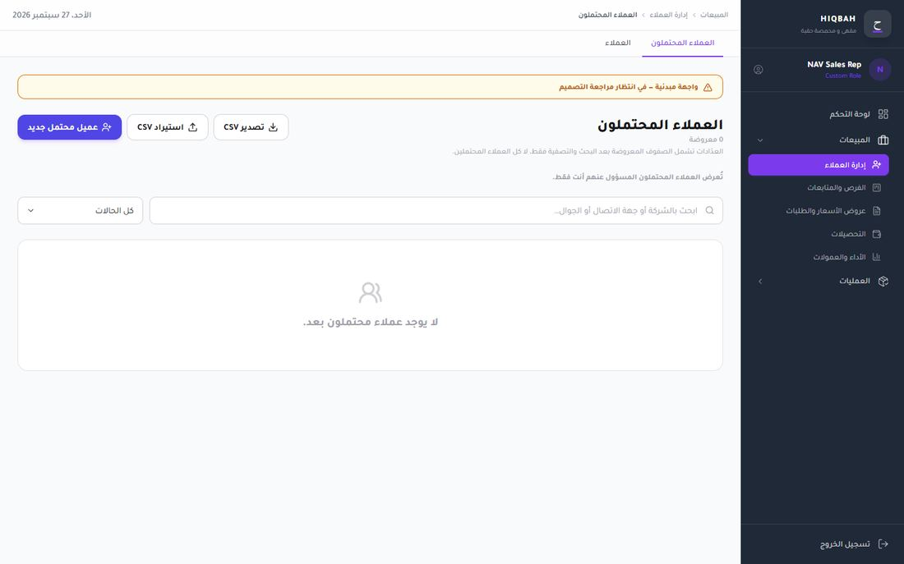
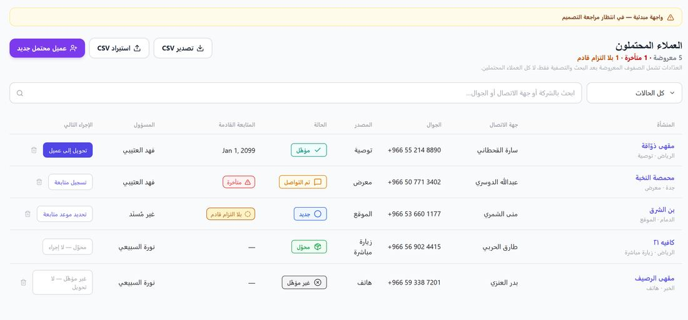
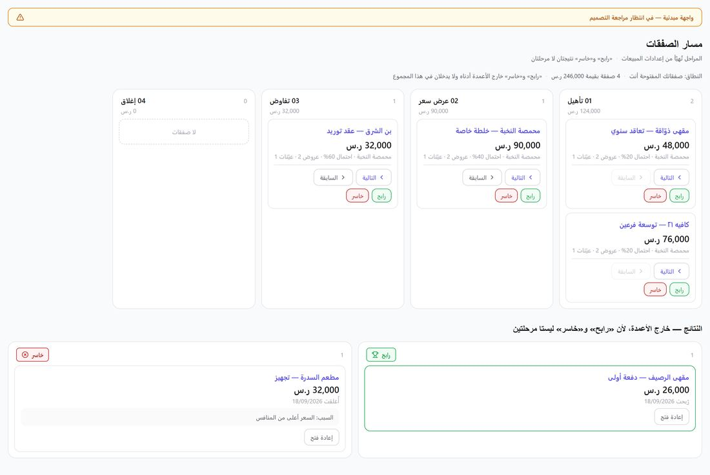
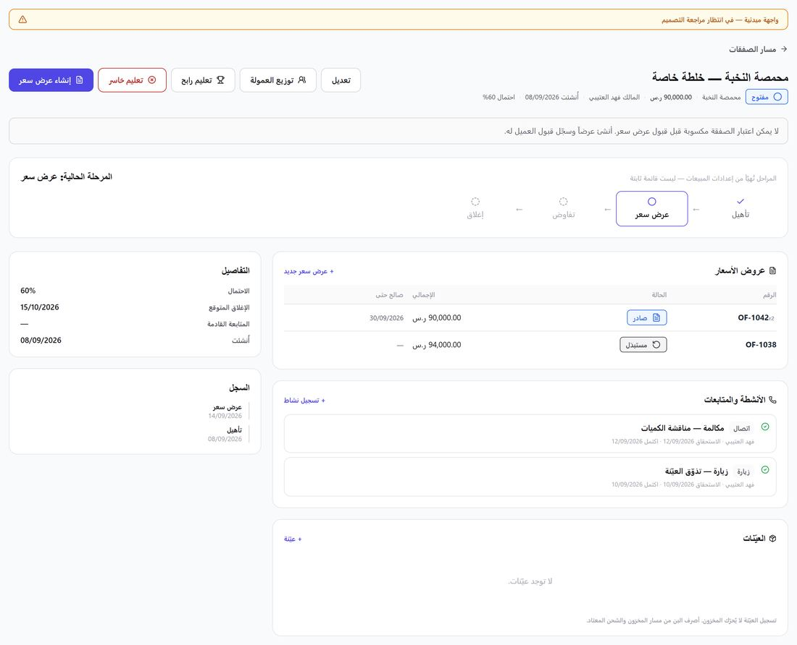
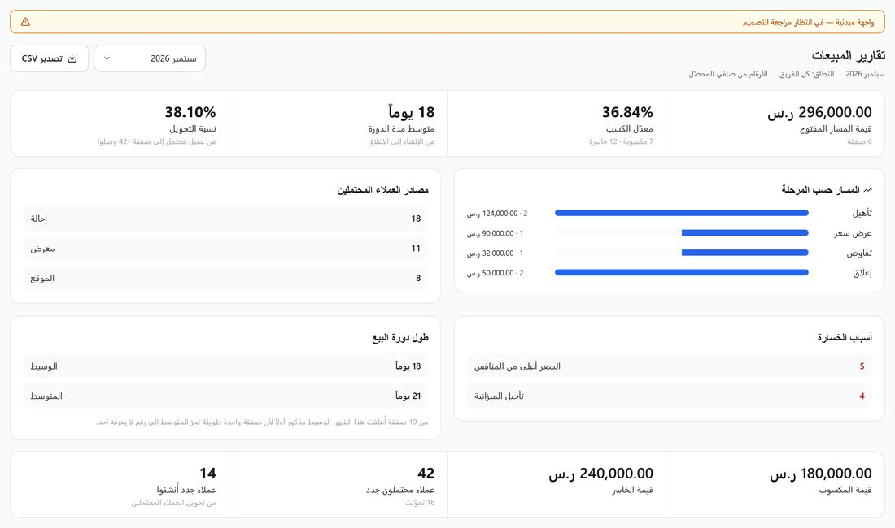
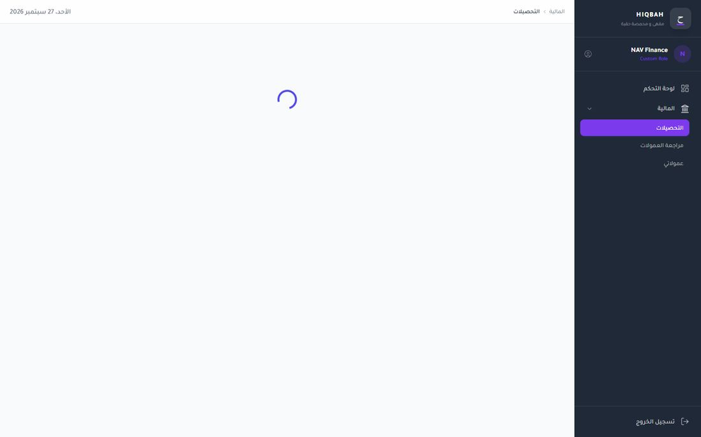
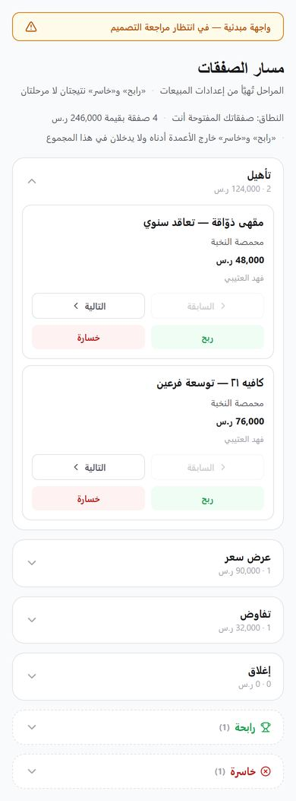

Hiqbah / BeanFlow ERP · design benchmark and redesign specification
One coherent operating system for a roastery, instead of three apps sharing a sidebar
The ERP's domain logic is unusually careful: gram-level reconciliation, declared loss, partial packages, separate fulfilment and payment states, permission-aware navigation. The interface has not caught up. It ships three parallel UI kits, two accent colours, twenty-one font sizes and twenty-eight hand-built tables. This report benchmarks 70+ screens from 40+ products on Mobbin, audits the current code and screenshots, and specifies a single system precise enough to rebuild the Figma file and the production UI from.
src/, including 9px and 10px Arabic (66 uses)@tanstack/react-table, though it is installed; 28 hand-rolled tablesslate-light, oo-text-muted)The five decisions that matter most
- Collapse to one token layer and one component kit. Delete
--orange(it is violet),--oo-*(indigo) and the per-module kits insales/_components/ui.tsxandfinance/_components/ui.tsx. Ship onesrc/components/ui/built on the tokens in §8. Everything else in this report depends on it. - Build one DataTable and use it everywhere. Sticky header, pinned identifier column, saved views as tabs, filter chips, column visibility, bulk bar, summary row, skeleton rows. Most daily work in this ERP is a table (§11).
- Replace the dark violet chrome with a calm, light, Arabic-first shell. Light sidebar on the right, 44px top bar with breadcrumb and a Ctrl K command palette that understands Arabic spelling variants and order numbers (§10).
- One status registry. Every business status maps to one of six tones, a fixed Arabic label and a dot. "Overdue" becomes a separate flag, never a status (§9).
- Fewer cards, more structure. Dashboards become a metric strip, an "needs attention" queue and two charts. Detail pages become a header, a main column and a properties panel. Explanatory paragraphs move into tooltips.
Priority overview
| Priority | Meaning | Count | Examples |
|---|---|---|---|
| P0 · Critical | Misleads a decision, blocks accessibility, or makes every later fix more expensive | 9 | Token/kit consolidation, wrong date locale (Jan 1, 2099 in an Arabic table), funnel bars scaled by count but labelled with value, 2.5:1 text, native confirm() dialogs |
| P1 · High impact | Measurably slows daily work or causes repeat errors | 13 | Shared DataTable, pipeline card buttons, page-header copy blocks, full-page spinners, IA labels, permanent "provisional UI" banner |
| P2 · Improvement | Polish and consistency once the system is in place | 9 | Empty-state actions, Latin wordmark and "Custom Role" in Arabic shell, icon mirroring rules, print styles |
Scope guard: nothing here changes business logic, permissions, the data model or the four-way gram reconciliation. Where a UX change touches behaviour (e.g. drag to move a deal), it calls the same server action the current buttons call.
02
Method and limits
Mobbin benchmark
17 targeted searches (web, plus one iOS) covering data tables, CRM pipelines, record detail, finance dashboards, cash flow, budget vs actual, inventory, approvals and bill pay, tasks, notifications, command palettes, audit logs, roles and permissions, analytics with period comparison, quote/invoice builders, skeleton states and mobile lists. Every reference below was opened and read from its screenshot, not from metadata. Each one links to its Mobbin page in the reference index.
Codebase and screenshot audit
The erp/ source at commit 841274f: globals.css, lib/nav/registry.ts, the dashboard shell, all 44 dashboard pages and the three UI kits, measured with grep counts quoted in each finding. Visual evidence comes from the 59 harness screenshots in tests/harness/shots/ and the 4 shell screenshots in docs/sales/nav-shots/. The draft design skill «دستور واجهات حقبة» v1.0 was used as the starting baseline.
Limits, stated plainly.
Mobbin contains no Arabic RTL ERP and no coffee-roasting or shop-floor screens. RTL guidance comes from the W3C internationalisation rules and Arabic typesetting practice, not from a reference product. Production and QC patterns are adapted from Shopify's batch fulfilment, DoorDash's order drawer and Linear's issue model.
Mobbin images could not be embedded: this environment's network policy blocks downloads from Mobbin, so references are links. The "before" screenshots are the repository's own.
The harness screenshots render Sales pages without the app shell and, in some, with a fallback font; findings about the shell use the nav-shots images, which do include it.
No usability testing was run. Severity is judged from task impact, not measured.
03
Reference products: what to take, what to leave
Seventeen products recur across the strongest results. None is a template for Hiqbah; each contributes one or two specific mechanisms.
| Product | Strongest at | Take | Do not copy |
|---|---|---|---|
| Attio | Record pages, activity with attribute diffs, pipeline cards | Activity entries that show field: old → new; favourites and lists in the sidebar; record header with one primary action | Star ratings and decorative colour dots on every attribute |
| Linear | Density, keyboard speed, properties panel, board with hidden columns | Properties panel on the record's end side; "1 hidden by filters · Clear"; status icons that encode progress | Engineering vocabulary (cycles, estimates); monochrome to the point of losing status meaning |
| Twenty | Open-source CRM tables: filter menu split into visible and hidden fields, "Count all" footer, side panel records | Footer aggregates per column; filter field search; record side panel with "Open" to full page | Showing "System" as creator in user-facing columns |
| Pipedrive | Pipeline board, "Focus" overdue activity above history | Stage header with value and count; warning icon on stalled deals; overdue activity pinned above the history feed | Green "+ Deal" as the only colour in the chrome |
| HubSpot | Board totals and weighted totals per stage, saved views as tabs | Total and weighted total in a fixed column footer; "No activity for 3 days" on the card | Header full of orange CTAs and upsell |
| Xero | Bills: status tabs with counts, date filters, bulk approve; cash-flow projection with a drawer for overdue bills | Status tabs that carry counts; "Approve / Submit for approval" appearing only after selection; "Projected end balance" as one of three numbers | Bright blue global header; dense dropdowns for every filter |
| QuickBooks | Business-at-a-glance home | "3 to review" links inside each finance widget; bank balance vs balance in books | Nine equally weighted widgets, donut charts, "Add widget" placeholders |
| Shopify | Inventory columns, purchase orders, Bill Pay bulk bar, permission tree, batch pick → print → pack | Unavailable / Committed / Available / On hand / Incoming; floating bulk action bar; stepper with timeline under it; "Unsaved changes · Discard · Save" in the top bar | Product thumbnails in every row (green coffee has no photo) |
| Square | Item library with status dropdown in the row, invoice builder, skeletons | Line-item editor with sticky totals; skeleton that keeps the exact table geometry | Consumer-scale round buttons |
| Monarch / Copilot Money | Account groups with totals, budget vs actual bars | Grouped list with group subtotal on the same row; Spent / Budget / Left columns | Dark mode as the default; emoji categories |
| Klaviyo, Toggl, Customer.io, Grok | Audit logs | Actor · action · entity · exact time; "From → To" chips; event histogram above the log | Raw event IDs as the first column |
| Plain, Basecamp, HoneyBook | Tasks | "My tasks / All / Done" with counts; task detail as side panel; "Assigned to me" grouped by due window | Playful copy and emoji in task titles |
| Remote | Expenses with filter chips and an undoable status toast | Toast "Expense marked as reimbursed · revert"; Requested by / Created / Amount / Converted / Status | Large empty table frame when few rows exist |
| Salesforce, Zoho CRM | Breadth: related lists, bulk actions, filter sidebar | "0 items selected (limit 50)" honesty; related lists as tabs | Visual noise: icons, colours and boxes on every element |
| DoorDash Merchant | Order drawer, product mix table with totals row, analytics period comparison | Drawer that keeps the list visible; "All items" totals row at the top of a table | Red brand used as the only action colour |
| Mintlify, Klaviyo analytics | Metric tabs that switch the chart; explicit comparison period | Metric strip where each metric is a tab for the chart below; "compared to previous period" stated next to the date range | Charts with no units |
| Vapi, Juicebox, Magnific | Command palettes | Sections (Actions / Recent / Pages), shortcut hints, footer legend for keys | Voice input; dark-only palettes |
04
Pattern library
Thirty-three patterns, each answered on the same five points: who does it well, why it works, the principle behind it, whether it fits Hiqbah, and how to adapt it. Fit is marked Adopt, Adapt or Avoid. Click a heading to collapse it.
Navigation and shell
01Light, grouped sidebar with favourites and recentsAdopt
Why it works
The sidebar shares the canvas tone, so content is the brightest surface on screen. Sections are labelled in small grey text; selection is a tint plus weight, not a saturated pill.
Principle
Figure–ground: chrome recedes, work advances. Recognition over recall via favourites and recents.
Fit for Hiqbah
Yes. The current dark #1F2937 sidebar with a violet active pill is the loudest element on every page.
Adapt
Sidebar on the right (RTL start), 232px, canvas background, a 2px brand-green inner rule on the start edge of the active item. Two levels maximum. Section order: favourites, then modules. Counts only for queues a person must clear (approvals, overdue tasks), never totals.
02Top bar with breadcrumb, global search and quick createAdopt
Why it works
The same three things are in the same place on every page: where am I, find anything, make something. Breadcrumb doubles as a back stack.
Principle
Consistency and spatial memory; global actions are global.
Fit for Hiqbah
Yes. Today the top bar holds a breadcrumb and a long-form date (الأحد 27 سبتمبر 2026) that nobody needs on every page.
Adapt
44px bar. Start side: breadcrumb. Centre: search field reading ابحث أو انتقل… with Ctrl K. End side: + جديد menu, approvals inbox with count, avatar. Drop the date; show it only on dashboards and reports where the period matters.
03Command paletteAdopt
Why it works
One input reaches records, pages and actions. Sections (Actions, Recent, Pages) and a key legend teach the shortcut while it is used.
Principle
Flexibility and efficiency of use: novices click, experts type.
Fit for Hiqbah
Yes, and it is the single biggest speed gain for staff who know an order number or a lot code.
Adapt
Arabic-aware matching: normalise أ إ آ → ا, ة → ه, ى → ي, strip tashkeel and tatweel, treat Arabic-Indic and Latin digits as equal. Typed patterns jump directly: #1042 → order, GB-014 → green lot, B-20260930 → roast batch, OF-1042 → quote. Bind shortcuts to event.code (physical key), not event.key, so they work on an Arabic keyboard layout.
04Saved views as tabs, with countsAdopt
Used well by
Why it works
Xero's Draft 13 · Awaiting approval 1 · Awaiting payment 6 answers "what needs me" before the table loads. The tab is a filter people already understand.
Principle
Visibility of system status; progressive disclosure of filters.
Fit for Hiqbah
Yes, for every list with a workflow: orders, quotes, bills, production orders, tasks, collections.
Adapt
First tab is always الكل; then one tab per actionable state; counts in a muted chip; a personal view is created from the current filters with حفظ كعرض and marked personal or shared. Maximum six visible tabs; the rest go into المزيد.
Data display
05Dense data table with sticky header and pinned identifierAdopt
Used well by
Why it works
Rows of 32–40px with hairline dividers fit 15–20 records above the fold. The first column stays put while numbers scroll, so a row never loses its name.
Principle
Information density with low visual noise (data-ink ratio).
Fit for Hiqbah
Yes. Full spec in §11.
Adapt
In RTL the pinned column sits on the right. Numeric columns align to the end (left) with tabular figures; text aligns to the start (right). Below 1024px keep the table and scroll horizontally behind the pinned column rather than converting rows to cards.
06Filter chips plus an "add filter" field pickerAdopt
Why it works
Each active filter is a readable sentence (Created by: Ji Ho Lim ×) that can be removed in one click. The picker searches fields, so 30 filterable fields do not need 30 dropdowns.
Principle
Recognition over recall; reversible actions.
Fit for Hiqbah
Yes. Current lists offer one status select and a search box.
Adapt
Chip text: الحالة: بانتظار الاعتماد ×. Inactive suggested filters render as dashed chips (المسؤول, الفترة) so the most common ones are one click away. Filters, sort and view live in the URL query so a filtered list can be shared and survives Back.
07Floating bulk action barAdopt
Used well by
Why it works
Actions appear only when there is something to act on, next to the count of what they act on (3 selected · Schedule 3 payments).
Principle
Contextual controls; the verb names the scope.
Fit for Hiqbah
Yes: approve bills, assign leads, print labels, move orders to dispatch, export.
Adapt
Bar floats 16px above the table footer, ink background. Text: 3 محددة من هذه الصفحة · تحديد كل النتائج (48). Destructive bulk actions confirm with the count and the entity name and report per-row success or failure afterwards.
08Summary row and column aggregatesAdopt
Used well by
DoorDash product mix, Square category sales, Twenty, Airtable
Why it works
Totals sit where the eye already is, in the column they total. No separate KPI card has to repeat them.
Principle
Proximity; one number, one place.
Fit for Hiqbah
Yes: kg on hand, order value, outstanding receivables, roast loss.
Adapt
Footer row on the sunken surface, sticky at the bottom of the scroll area. Label in the pinned column states the scope: إجمالي 48 نتيجة (بعد التصفية). Totals only for additive columns with one unit; never sum mixed units (kg and bags).
09Status cells as tinted tags with a dotAdopt
Why it works
Low-saturation tint plus a dot reads at a glance without the row turning into a colour chart. Text carries the meaning; colour only speeds scanning.
Principle
Redundant encoding (colour + shape + text); WCAG 1.4.1.
Fit for Hiqbah
Yes. Currently three badge systems with outlined pills of varying radius.
Adapt
Six tones only, mapped in the registry (§9). 20px high, 4px radius, no border. Derived risk ("overdue", "low stock") is a separate red flag next to the status, never a replacement for it.
10Group-by with group subtotalsAdapt
Why it works
The group header row carries its own subtotal, so structure and sum read together.
Principle
Chunking; hierarchy through position rather than boxes.
Fit for Hiqbah
Adapt: useful for inventory by category or origin and for expenses by account; not for transactional lists where sort order matters more.
Adapt
Group header 36px, sunken surface, chevron that rotates toward the content (down when open, toward the end side when closed, i.e. pointing left in RTL). Inventory groups: بن أخضر · مواد تعبئة · منتج نهائي, each with kg or unit subtotal.
11Metric strip whose items switch the chartAdopt
Used well by
Why it works
Five numbers in one bordered strip, divided by hairlines, use a third of the height of five cards. Selecting one re-plots the chart below, so the strip is also navigation.
Principle
Overview first, details on demand (Shneiderman).
Fit for Hiqbah
Yes; it replaces the two rows of four KPI cards on Sales reports and the executive dashboard.
Adapt
Each item: label, value with unit, comparison stated in words (+8٪ عن سبتمبر 2025), and a definition tooltip. Comparison only between equal-length periods; a partial month compares to the same days of the previous month.
12Explicit comparison period next to the date rangeAdopt
Why it works
"Jun 22 – Jul 22, compared to previous period" removes the most common misreading of a delta.
Principle
Honest data display; state the denominator.
Fit for Hiqbah
Yes. Dashboard deltas today do not say what they compare against.
Adapt
Period control: presets (اليوم، 7 أيام، هذا الشهر، الشهر الماضي، هذا الربع، مخصص) plus a comparison select (الفترة السابقة، نفس الفترة من العام الماضي، بدون). Calendar is always Gregorian, weeks start Sunday.
13Budget vs actual as bars inside a tableAdopt
Used well by
Why it works
Spent, Budget and Left as columns with an inline bar give both the exact number and the shape. Overspend turns red and the bar caps at 100% with the excess stated.
Principle
Small multiples; preattentive length comparison.
Fit for Hiqbah
Yes, for the monthly cash budget.
Adapt
Columns: البند · المعتمد · الفعلي · الملتزم · المتبقي · نسبة الاستهلاك. Bar fill colour by threshold (≤85% brand, 85–100% warning, >100% danger), with the percentage always printed.
14Cash projection line with an editable driver drawerAdapt
Used well by
Why it works
Three numbers (money in, money out, projected end balance), one line, and a drawer to fix the assumptions (e.g. when overdue bills will be paid) without leaving the chart.
Principle
Direct manipulation of model inputs; keep the result in view.
Fit for Hiqbah
Adapt: only show projection where the backend has dated obligations; mark the projected part of the line as dashed and label it متوقع.
Adapt
Never mix "allocated" with "paid": a rent allocation is not a cash outflow until the payment is recorded. The drawer lists obligations with their expected date; changing a date re-plots immediately and is saved as a planning assumption, not a transaction.
Records and workflow
15Record page: header, main column, properties panelAdopt
Used well by
Why it works
Facts that change rarely sit in a narrow panel; the work (activity, line items, documents) gets the wide column. No card wraps each group.
Principle
Separate reference data from working data; F-pattern scanning.
Fit for Hiqbah
Yes, for deals, leads, customers, orders, production orders, bills.
Adapt
RTL: main column on the right (start), properties panel 320px on the left (end). Header: title, ID in mono, status tag, owner; one primary action on the end side plus a ⋯ menu. Tabs below the header: النشاط · عروض الأسعار · الطلبات · العينات · الملفات.
16Activity timeline with attribute diffs and a pinned "next up"Adopt
Used well by
Attio, Pipedrive (Focus), Salesforce (Upcoming & Overdue), Toggl
Why it works
The overdue follow-up is pinned above history, so the record page answers "what do I do next". History is grouped by day; field changes read as Stage: Prospecting → Meeting.
Principle
Prospective memory support; audit-friendly transparency.
Fit for Hiqbah
Yes. The deal page shows activities as boxed cards and history as a separate card.
Adapt
One feed, filterable by type (مكالمات، زيارات، عينات، عروض، تغييرات). Composer at the top. Each entry: actor, verb, object, exact time on hover (30 سبتمبر 2026، 14:05 بتوقيت الرياض), relative time inline. Rail and dots on the start side (right).
17Drawer for preview and quick edit, page for real workAdopt
Used well by
Why it works
The list stays visible and keeps its scroll and filters; the drawer has an "Open" escape to the full page.
Principle
Preserve context; match container to task length.
Fit for Hiqbah
Yes; today 33 hand-built fixed inset-0 overlays mix both jobs.
Adapt
Rule: drawer (480px, slides from the left edge in RTL, i.e. the end side) for preview, quick create of small objects, single-field edits, filters on mobile. Page for anything with line items, more than ~8 fields, approvals or comparisons. Dialog (max 480px) only for a decision: confirm, choose, or a reason (lost reason, rejection reason).
18Line-item editor with sticky totalsAdopt
Used well by
Why it works
Lines in a table, settings in a side column, the total always visible. Shopify's "Unsaved changes · Discard · Save" bar makes the dirty state impossible to miss.
Principle
Visibility of system status; error prevention.
Fit for Hiqbah
Yes for quotes, sales orders, purchase orders, supplier bills.
Adapt
Columns: المنتج/SKU · الوزن · الكمية · سعر الوحدة · الخصم · الضريبة · الإجمالي. Totals panel states VAT inclusion explicitly (الأسعار غير شاملة ضريبة القيمة المضافة). Keyboard: Enter adds a line, Tab moves across cells. Unsaved bar in the top bar, not a modal.
19Approvals: status tabs, approve after selection, reason on rejectAdopt
Used well by
Why it works
Approval is a queue. A tab per stage, bulk approve, an undo toast, and a mandatory reason when rejecting.
Principle
Make the queue visible; make reversals cheap; make refusals explain themselves.
Fit for Hiqbah
Yes: quotes over discount limit, supplier bills, budget changes, commission periods, collection verification.
Adapt
An الاعتمادات inbox merges every queue the user can act on. On the record, an ApprovalPanel shows stage, approver, decision, reason and time. "Approved" never reads as "paid": a bill shows approval and payment as two separate fields.
20Pipeline board with stage totals and stall warningsAdopt
Used well by
Why it works
Cards are small (title, company, value, owner, a stall icon). Stage value and weighted value live in the column header or footer. Moving a card is a drag, not a button.
Principle
Direct manipulation; minimal card content; status at the edge.
Fit for Hiqbah
Yes; the current card carries four buttons and the board ends with two large outcome panels.
Adapt
Stages flow right to left (first stage at the right). Drag plus keyboard alternative (focus card, M opens نقل إلى…). Won/Lost are drop zones that appear while dragging and are filtered views, not columns. Lost requires a reason in a dialog.
21Process stepper with the work list beneath itAdapt
Why it works
The stepper is the page's spine; the current step expands into the actual list of things to do; a comment timeline sits under it.
Principle
Match the system to the real-world process.
Fit for Hiqbah
Adapt for production orders: مخطط → تحميص → جودة → تعبئة → جاهز.
Adapt
Each step shows its own status and quantity (e.g. تحميص · 3 دفعات · 42.6 كغ). Partial completion is shown as such, never rounded to done. Tablet first for the floor: 48px targets, one primary action per step.
22Task list with "My tasks / All / Done" and a detail side panelAdopt
Why it works
Tasks grouped by due window (overdue, today, this week, later), each row with ID, title, linked record, assignee and due date. Detail opens beside the list.
Principle
Temporal grouping fits how people plan their day.
Fit for Hiqbah
Yes; specified in §12.
Adapt
"Overdue" is a flag that coexists with قيد التنفيذ; completion stops the clock and stores the completion time. Manager view adds grouping by assignee with counts of overdue per person.
23Roles as a permission tree with countsAdopt
Why it works
Module rows show 0/11 granted; expanding reveals sub-permissions with indentation (View → View cost). Unsaved bar at the top.
Principle
Progressive disclosure; make dependencies visible.
Fit for Hiqbah
Yes; maps directly onto module + sub abilities already in registry.ts.
Adapt
Add a "data scope" column per module (الكل · فرعي · سجلاتي فقط). Show "Users with this role (4)" in the header. Changes are audited with a from → to diff.
24Audit log with from → to chips and a volume histogramAdopt
Used well by
Why it works
Filters (user, entity, action, time), a small histogram showing when activity spiked, and rows that expand to the full diff.
Principle
Traceability with fast narrowing.
Fit for Hiqbah
Yes, extending the current History page; essential for stock adjustments and finance.
Adapt
Columns: الوقت · المستخدم · الإجراء · الكيان · التغيير. Kilogram and money diffs show both values and the signed difference (48.20 → 45.70 (−2.50 kg)). Export restricted by permission.
Feedback and states
25Notifications as an inbox with inline actionsAdopt
Why it works
Each notification carries the one action it asks for (Sign document, View profile). Type tabs and "Unread only" keep it manageable.
Principle
Actionable notifications; reduce navigation.
Fit for Hiqbah
Yes: QC sample due, stock below reorder point, approval requested, task overdue, payment received.
Adapt
Popover from the top bar (400px) with tabs الكل · اعتمادات · مهام · مخزون · مالية; full page at /dashboard/inbox. Only events that need a person become notifications; everything else stays in activity feeds.
26Toast with undo for reversible actionsAdopt
Used well by
Why it works
Confirms what happened to which record, with a way back, without blocking.
Principle
Forgiveness over confirmation for reversible actions.
Fit for Hiqbah
Yes; replaces most of the 9 confirm()/alert() calls.
Adapt
Bottom-start (bottom-right in RTL), 6s, pauses on hover/focus, role="status". Text names the entity: نُقلت الصفقة «محمصة النخبة» إلى تفاوض · تراجع. Save errors are never toast-only; they render inline at the field or form.
27Skeletons that keep the final geometryAdopt
Why it works
Headers and filters render immediately; only cells shimmer. Nothing jumps when data arrives.
Principle
Perceived performance; stable layout (CLS).
Fit for Hiqbah
Yes; Finance collections currently shows a centred spinner on a blank page.
Adapt
Show the skeleton after 150ms (avoid flicker on fast loads). Table: 8 skeleton rows at the active density. Metric: label real, value skeleton. Never render 0 while loading or after a failed fetch.
28Empty states that differ from "no results"Adopt
Used well by
Midday ("No invoices · Create invoice"), Linear ("1 issue hidden by filters · Clear"), v0
Why it works
First-use empty explains and offers the first action. Filtered-empty says filters are the cause and offers to clear them.
Principle
Help users recognise, diagnose and recover.
Fit for Hiqbah
Yes; the leads page shows لا يوجد عملاء محتملون بعد. with no action inside a 200px white box.
Adapt
Three variants: first use (one line + primary + secondary like import), no results (لا نتائج تطابق 3 عوامل تصفية · مسح التصفية), no permission (what is restricted and who grants it). Max height 240px; icon 24px, no illustrations.
29Inline alerts sized to their scopeAdapt
Used well by
Why it works
A page-level problem gets a banner; a row-level problem gets a tag in the row; a field problem gets text under the field.
Principle
Proximity of feedback to cause.
Fit for Hiqbah
Adapt: the permanent واجهة مبدئية — في انتظار مراجعة التصميم banner takes about 90px of height on every Sales page and trains people to ignore banners.
Adapt
Replace it with a small تجريبي tag beside the page title. Reserve full-width alerts for states that block work (period closed, sync failed, permission missing).
Domain screens
30Inventory: on hand, committed, available, incomingAdopt
Used well by
Why it works
Five numeric columns with the same unit, right next to each other, make shortages arithmetic you can see. Shopify puts "Unavailable" first so the problem is visible.
Principle
Comparison needs adjacency.
Fit for Hiqbah
Yes; the current lot table already has Total/Available/Reserved/Free but uses bg-cream headers and 16px padding per cell.
Adapt
Columns use backend definitions only; do not compute "available" in the UI. Add يغطي (أيام) where consumption data exists and a reorder-point bar. Lots and expiry open as expandable sub-rows, not duplicate rows.
31Finance home: balances, "to review" links, money in vs outAdapt
Used well by
Why it works
Each figure links to the work behind it ("3 to review", "759 to review"). Bank balance and book balance are shown side by side.
Principle
Every number is a doorway to its records.
Fit for Hiqbah
Adapt: drop donuts and widget marketplaces; keep balance pairs and review links.
Adapt
Specified in §12 Finance. Receivables and payables use ageing buckets (جارٍ · 1–30 · 31–60 · 61–90 · +90) as a stacked bar plus a table, never as a donut.
32Mobile: segmented status filter and grouped listAdopt
Used well by
Why it works
Search + sort + filter in one row, segmented status, date-grouped rows with the amount at the end. One line of meta per row.
Principle
Thumb reach; one decision per screen.
Fit for Hiqbah
Yes for the mobile web views and erp-mobile.
Adapt
The mobile pipeline becomes a stage segmented control plus a compact list, instead of an accordion of full cards with four buttons each.
33Dashboard as a widget wallAvoid
Seen in
Why it fails
Every box has equal weight, so nothing is urgent. Charts with record counts ("Record Count 0–2") answer no question.
Principle
Hierarchy requires inequality.
Fit for Hiqbah
Avoid. The current executive dashboard is drifting this way (KPI cards, two charts, pipeline pills, three lists in cards).
Instead
A command center with three bands: metric strip, "needs attention" queue, two decision charts. See §12.
05
Audit of the current ERP
Evaluated against the patterns above. Every finding has an ID used in the roadmap, evidence you can re-run, the impact on a person doing the job, and the specific change.
What already works, and must survive the redesign
One navigation registry
lib/nav/registry.ts drives sidebar, contextual tabs, breadcrumbs, active state and the route guard from one tree, with requiresAll/unlessAny placement rules. Keep it; change its labels and depth (§10), not its mechanism.
Domain honesty in the UI copy
Won/Lost are outcomes, not stages; "a sample does not move stock"; fulfilment and payment are separate; counts state that they reflect filters. The content is right. The placement (paragraphs above every list) is what changes.
Separate order statuses with distinct meaning
The --oo-status-* comments distinguish Rejected (order-level) from Blocked (item-level) and keep Cancelled neutral, not red. That thinking becomes the global status registry (§9).
Tabular numerals and logical properties already in use
109 tabular-nums and 270 logical-direction utilities show the right instincts. The redesign makes them defaults instead of per-component choices.
Lead table "next action" column
Each lead row offers the one action its state allows (تحويل إلى عميل, تسجيل متابعة, تحديد موعد متابعة). This is the right model; it should become a row action pattern used across modules.
Unsaved-changes guard and stacked tables for the floor
useUnsavedGuard and the .stack-table rationale (operators at 1024px losing their row) come from real observation. Keep the intent; change the mechanisms (§11).
Evidence: current screens

docs/sales/nav-shots). Shell as shipped.- Dark sidebar and violet active pill are the highest-contrast objects on the page; the work area is grey on grey.
- The active sidebar item is إدارة العملاء, a container name. "Leads" exists only as a tab, so the sidebar never names the page you are on.
- A 38px provisional banner with margins (about 90px of height), then the title, then three lines of explanatory text before the first control.
- Primary button is indigo
#4F46E5; active nav is violet#7C3AED. Two brand colours. - "Custom Role" and "HIQBAH" in Latin inside an Arabic shell.
- Empty state has no action; the create button is 600px away.

tests/harness/shots/leads-AFTER.png).- Jan 1, 2099: an English-locale date and what looks like a sentinel value leaking into an Arabic table.
lib/utils.tsformatDate()hard-codes"en-US". - Status pills are outlined, 32px tall, with a different icon each; "overdue" and "no next commitment" use the same shape as statuses.
- Row actions vary from 96px to 180px wide and wrap (غير مؤهّل — لا تحويل on two lines), so the column edge is ragged.
- Rows are about 66px tall (CSS px): roughly 9 leads fit on a 1440×900 screen after the header block. At the proposed 40px rows, 15 fit.

sales-pipeline.png).- Every card carries four buttons (السابقة، التالية، رابح، خاسر): with 40 open deals that is 160 buttons on one screen.
- Stage names are prefixed "01 … 04"; the number adds nothing the order does not already say.
- Stage value sits under the title in grey; there is no weighted value and no stall indicator.
- Won and Lost occupy half the page as two framed panels, pushing nothing useful.
- The mobile version labels the same actions ربح / خسارة instead of رابح / خاسر.

sales-deal-detail.png).- Five header buttons of similar weight; تعليم خاسر is outlined red next to the primary.
- The stage stepper lives in its own 170px card with a sub-caption explaining that stages are configurable.
- Seven separate cards on one page; properties are pushed to a narrow column at the far end with large gaps.
- Activity entries are boxed cards with icons; history is a separate card that repeats stage changes.

sales-reports.png).- The stage bars are scaled by deal count but labelled with value. 124,000 and 50,000 render at the same length because both stages hold 2 deals (
sales/reports/page.tsx:98, 223). - Eight KPI cards in two rows with no ordering by importance; three-decimal-place percentages (38.10%).
- Lead sources, loss reasons and cycle length are grey pill lists inside cards rather than a sortable table or bar list.


Findings
| ID | Pri. | Area | Finding and evidence | Impact | Change |
|---|---|---|---|---|---|
| A1 | P0 | Tokens | Two competing token systems and misleading names: --orange is #7C3AED violet, --brown is grey, --oo-action-primary is indigo #4F46E5. 796 raw Tailwind palette classes (bg-blue-50, text-emerald-600…) bypass both. | Every screen picks its own colours; no change can be made globally. | One token layer (§8). Codemod raw palette classes to semantic utilities; lint rule bans -(blue|green|red|amber|…)-[0-9]. |
| A2 | P0 | Components | Three UI kits: sales/_components/ui.tsx (Button, Card, Pill, Money, EmptyState…), finance/_components/ui.tsx (Button, Card, Badge, Kpi, Table, INPUT with border-2 rounded-[10px]), and OrderLifecyclePanel on --oo-*. | Same control behaves and looks different per module; three places to fix each bug. | Single src/components/ui/; module kits become thin re-exports, then are deleted. |
| A3 | P0 | Typography | 21 distinct font sizes; text-[10px] ×64 and text-[9px] ×2 for Arabic; font-black/extrabold ×170; headings at weight 800. Tajawal is loaded while the draft skill says Cairo. | Arabic glyphs with dots and marks become illegible below 12px; weight 800 turns every heading into a shout. | 9-step scale, minimum 12px, weights 400/500/600 only, one family (§8.1). |
| A4 | P0 | Dates | formatDate() in lib/utils.ts uses "en-US"; cupping uses "en-GB"; Sales uses its own formatDay. Leads table shows Jan 1, 2099. | Mixed-language dates; a placeholder date looks like a real commitment. | One format.ts (§13). Never render sentinel dates; show بلا موعد. |
| A5 | P0 | Charts | Pipeline-by-stage bars use count / maxCount width but print the value (sales/reports/page.tsx:98,223). Dashboard chart colours are hard-coded hex (C_ORANGE = "#7C3AED"). | A manager compares stage value by bar length and is wrong. | Bar length encodes the printed measure; a toggle switches measure (value / count). Chart colours come from chart tokens. |
| A6 | P0 | Contrast | 217 text uses of slate-light/brown-light/oo-text-muted (#9CA3AF, #A1A1AA): 2.54:1 on white. Used for meta text, dates and helper copy. | Fails WCAG 1.4.3; meta text is unreadable on many office monitors and in sunlight on tablets. | --ink-3 #5E6A62 (5.65:1) is the lightest text colour. --ink-4 only for placeholders and disabled. |
| A7 | P0 | Dialogs | 9 native alert()/confirm() calls (e.g. orders/page.tsx:224,247,308, history/page.tsx:83 "No data to export" in English) and 33 hand-built fixed inset-0 overlays. | Native dialogs render in browser chrome, LTR, unstyled; custom overlays lack focus trap/return and Esc handling consistency. | One Dialog and one Drawer primitive (Radix-based or equivalent), confirm-with-entity copy, toast-with-undo for reversible actions. |
| A8 | P0 | Tables | 28 hand-rolled <table>s; @tanstack/react-table installed, 0 imports. No sticky header, column visibility, saved views, selection model or summary row anywhere. | Large lists (inventory movements, ledger) are slow to scan; every list reinvents sorting and empty states. | One DataTable on TanStack Table (§11). |
| A9 | P0 | Status | Three badge systems (.status-* classes, --oo-status-*, per-kit Pills) and inconsistent labels (رابح/ربح, خاسر/خسارة). "Overdue" and "no commitment" styled as statuses. | The same state reads differently across modules; derived risk hides the real status. | Status registry (§9) as code: one map, one StatusTag, one RiskFlag. |
| B1 | P1 | Shell | Dark #1F2937 sidebar, violet active pill, 64px user block, Latin wordmark. Sidebar shows container names (إدارة العملاء, الفرص والمتابعات) rather than destinations. | Heavy frame; users cannot find "Leads" or "Pipeline" by scanning the sidebar. | Light shell; leaves listed directly; containers become section labels (§10). |
| B2 | P1 | Density | Explanatory paragraphs under titles on leads, pipeline, reports, deal (العدّادات تشمل الصفوف المعروضة…, المراحل تُهيّأ من إعدادات المبيعات). | 60–90px of reading before the first control on every visit. | Move to an ⓘ tooltip by the count, or to the empty state where it is first relevant. |
| B3 | P1 | Banner | ProvisionalBanner on every Sales page (38px plus margins, amber, warning icon). | Banner blindness: the next real warning will be ignored. | تجريبي tag in the page header. |
| B4 | P1 | Pipeline | Four buttons per card; no drag; outcome panels below the board. | Slow updates; visual noise; board shows half as many deals. | Drag + keyboard "Move to"; card actions in ⋯; won/lost as drop zones and views. |
| B5 | P1 | Record pages | Deal: five header buttons, stepper card, seven cards, separate history. | No clear next action; long scroll for basic facts. | Header + main + properties panel (pattern 15) with one timeline. |
| B6 | P1 | Loading | Full-page spinner (Spinner, LoadingState) while the shell is blank. | Layout jumps; people think the page failed. | Skeletons per region; header and filters render immediately. |
| B7 | P1 | Dashboard | Executive dashboard is production-only (kg roasted, QC rate, loss), built as KPI cards + bar + pie + three lists. No cash, receivables, sales or tasks. | The owner cannot answer "are we OK this week" from the home page. | Command center (§12.1), scoped by role. |
| B8 | P1 | Tablet tables | .stack-table turns every table into cards below 1280px. | Comparison across rows (the reason for a table) is lost on the 1024 tablets the floor uses. | Pinned first column + horizontal scroll + column priority; cards only below 640px. |
| B9 | P1 | Money | Same amount printed as 90,000, 90,000.00 and 296,000.00 depending on page; currency position varies. | Hard to compare; decimals add noise in summaries. | Money rule (§13): 2 decimals in documents and ledgers, 0 in summaries and boards. |
| B10 | P1 | Direction | 201 physical-direction utilities (ml-, pr-, text-left, right-…) vs 270 logical. | The English mode (users can switch preferredLanguage) renders mirrored spacing incorrectly. | Codemod to logical utilities; lint rule. |
| B11 | P1 | Inputs | Finance INPUT uses a 2px border and 10px radius; Sales inputs 1px/8px; lead search is 44px tall. | Forms look like three products. | Input spec (§8.6). |
| B12 | P1 | IA | Orders appear under Sales or Operations depending on permission (good), but Customers appears either inside Sales or at top level, and "Reports and history" mixes analytics with audit. | People trained on one role are lost in another. | Fixed module order and names (§10); placement rules stay. |
| B13 | P1 | Mobile | Mobile pipeline: accordion with full cards and four 48px buttons each. | Two deals per screen. | Segmented stage + compact list (pattern 32). |
| C1 | P2 | Empty states | No action in empty states; same text for "none yet" and "no results". | Dead ends. | Three empty variants (pattern 28). |
| C2 | P2 | Language | "Custom Role", "HIQBAH", "CSV" in buttons, English toasts from alert(). | Mixed script in an Arabic product. | Arabic labels; Latin only for codes and proper nouns. |
| C3 | P2 | Icons | Ad-hoc rtl:rotate-180 on chevrons; arrows in the stepper (←) not mirrored consistently. | Direction cues contradict reading order. | Icon mirroring list (§13). |
| C4 | P2 | Radius and shadow | rounded-2xl ×146, rounded-xl ×413, shadow-* ×160. | Soft, consumer look; every block is a separate object. | Radius scale 4/6/8/12; shadows only on overlays. |
| C5 | P2 | Percentages | 38.10%, 36.84% in KPIs. | False precision. | 0 decimals in summaries, 1 in analysis tables. |
| C6 | P2 | Top bar date | Long-form date on every page. | Space with no task value. | Remove; period controls where relevant. |
| C7 | P2 | Stage numbering | "01 تأهيل" prefixes on board and stepper. | Decoration that looks like data. | Remove. |
| C8 | P2 | Print styles only hide .no-print. | Quotes and delivery notes rely on page layout. | Print tokens: black ink, 11pt body, repeated table headers. | |
| C9 | P2 | Focus | Focus rings vary (ring-orange/20, browser default). | Keyboard users lose their place. | One 2px brand focus ring with 2px offset. |
Counts are grep -ro over erp/src at commit 841274f; re-run them after each phase as a regression metric.
06
Design principles
Eight rules to settle arguments. Each has a test you can apply to a screen.
1 · The next action is never more than one glance away
Test: cover everything except the page header and the first row of content. Can you say what to do next? Record pages show one primary action; lists show the next action per row.
2 · Structure before containers
Test: count bordered boxes. A page earns a box only for an independent object (a pane, a drawer, a table). Groups inside use headings, dividers and alignment.
3 · Every number has a unit, a period and a source
Test: point at any figure and ask "of what, when, compared to what". Answer must be on screen or one hover away.
4 · Status is text first
Test: view in greyscale. Every state remains distinguishable by its label and shape.
5 · Arabic is the design, English is the translation
Test: design in Arabic with real names (محمصة النخبة, إثيوبيا يرغاتشيفي), then check the English mode for truncation, not the other way round.
6 · Dense, not cramped
Test: 15 rows on a 1440×900 screen with 12px+ text and 4.5:1 contrast. Density comes from removing boxes and copy, never from shrinking type.
7 · Context survives every action
Test: filter a list, open a record, go back. Filters, scroll and selection are intact. Quick edits happen in a drawer over the list.
8 · Calm by default, loud by exception
Test: on a normal day the screen has no red. Red, amber and motion are reserved for things a person must act on.
07
Visual direction: «سجلّ المحمصة» · the roastery ledger
A working ledger, not a dashboard template. Ink on paper-white, green-bean greys for structure, one deep espresso-green for action and a roast-copper accent reserved for data. Arabic set in IBM Plex Sans Arabic, which holds up at 12–13px in tables where Tajawal and Cairo get loose.
Materials
Paper (white surfaces), ledger lines (1px hairlines), ink (near-black green text), green bean (neutral tint and brand), roast copper (second data series, highlights in charts). No gradients, glass or glow.
What makes it Hiqbah
The green-tinted neutral system (no product in the benchmark uses it), Arabic-first type at table sizes, units and lot codes treated as first-class content, the four-way gram reconciliation as a signature visual (§12.4).
What it is not
Not violet SaaS, not a dark admin template, not cream-and-serif "artisan coffee" branding. The café brand can be warm; the operations tool is precise.
Palette
#F6F7F5 app background, sidebar#FFFFFF tables, panes#F0F2EF headers, footers#D5DBD4 container borders#7E8B82 inputs · 3.56:1#18221C text · 16.4:1#5E6A62 meta · 5.65:1#1F3A2C espresso green · 12.4:1#3E6B52 green bean · links, focus, chart 1#8A5A2B copper · accents#2D7048 on #E7F2EA · 5.19:1#8F5E14 on #FBF1DF · 4.96:1#B1382B on #FBEAE7 · 5.19:1#2C628C on #E8F0F7 · 5.64:1#4D5952 on #EEF1EE · 6.44:1Contrast ratios computed with the WCAG 2.x formula against white unless a pair is given. Brand and success are both green: success is never used without its text label and dot, and brand is never used for a status.
Type specimen
08
Design system specification
Values below are final proposals, not ranges. Names map one-to-one to CSS custom properties and Figma variables (collection hiqbah/core, modes light and dark; dark is specified for completeness, light ships first).
8.1 Typography
- Family
--font-sans: "IBM Plex Sans Arabic", "IBM Plex Sans", "Noto Sans Arabic", system-ui, sans-serif. One family for Arabic and Latin; it ships matched Latin glyphs, so mixed strings (طلب #1042 · SKU ETH-YRG-1KG) share one rhythm.- Numbers
.num=font-variant-numeric: tabular-numson every numeric cell, metric and amount. Verify thetnumfeature in the loaded build; if absent, set--font-num: "IBM Plex Sans"on.numonly.- Codes
--font-mono: "IBM Plex Mono"12px for IDs, lot codes, SKUs, IBANs, alwaysdir="ltr"+unicode-bidi: isolate.- Weights
- 400 body · 500 labels, buttons, table headers · 600 titles and metric values. Nothing above 600 in product UI (700 only in print headers).
- Decision needed
- This replaces Tajawal (production) and Cairo (draft skill v1.0). If brand keeps Cairo, raise every line height by 2px and the table row by 4px; Cairo's taller ascenders clip at 40px rows with 13px text.
| Token | Size / line | Weight | Use | Never |
|---|---|---|---|---|
text-caption | 12 / 18 | 400–500 | Meta, table headers, helper text, badges | Body copy, anything below 12px |
text-cell | 13 / 20 | 400 | Table cells, dense lists, sidebar items | Long-form text |
text-body | 14 / 22 | 400 | Default UI and form inputs, drawer content | |
text-label | 13 / 20 | 500 | Buttons, field labels, tabs | |
text-title-sm | 15 / 22 | 600 | Pane titles, card titles, record names in lists | |
text-title | 18 / 26 | 600 | Drawer and dialog titles, section headings | |
text-page | 22 / 30 | 600 | Page title (one per page) | Inside panes |
text-metric | 24 / 32 | 600 · tnum | Metric strip values | More than 6 per screen |
text-display | 32 / 40 | 600 · tnum | One headline figure (cash position) | More than 1 per screen |
Arabic rules: no letter-spacing on Arabic (it breaks joining); no uppercase/small-caps styling; no italics (use weight or colour); line height ≥ 1.5× for text ≥ 13px; minimum Arabic size 12px; truncation with ellipsis at the end side only for single-line cells, with full text in a tooltip.
8.2 Spacing, grid and density
- Scale (px)
- 0 · 2 · 4 · 6 · 8 · 12 · 16 · 20 · 24 · 32 · 40 · 48 · 64 as
--space-0…--space-64. 2 and 6 only inside components. - Page
- Gutter 24px ≥1280, 20px 768–1279, 16px <768. Max content width: none for tables; 1200px for forms and detail pages; 720px for single-column forms.
- Vertical rhythm
- Page header to toolbar 12px · toolbar to table 0 (toolbar sits on the table) · between panes 16px · between page sections 24px · form field to field 16px · label to input 6px.
- Grid
- 12 columns, 16px gutter at ≥1280. Detail pages: main 8 / properties 4 (min 300, max 360px). Dashboards: 12-column bands.
- Density modes
- Per table, persisted per user: compact row 32px (ledgers, movements); default 40px; touch 48px (auto on
pointer: coarse, production and packaging tablets). - Controls
- Height 32px desktop (sm 28px in toolbars/rows), 40px touch. Icon buttons 32×32 with 16px icons. Minimum target 24×24 (WCAG 2.5.8), 40×40 on touch.
8.3 Shape, borders, elevation, layers
| Token | Value | Applies to |
|---|---|---|
radius-xs | 4px | Status tags, checkboxes, kbd, chips inside inputs |
radius-sm | 6px | Buttons, inputs, selects, menu items, filter chips, sidebar items |
radius-md | 8px | Panes, tables' outer frame, popovers, toasts, kanban columns |
radius-lg | 12px | Dialogs only |
radius-full | 9999px | Avatars, dots, toggles |
border-subtle | 1px #E4E8E3 | Row dividers, inner separators |
border | 1px #D5DBD4 | Panes, table frame, cards in boards, sidebar edge |
border-control | 1px #7E8B82 | Text inputs, selects, checkboxes (meets 3:1, WCAG 1.4.11) |
elev-0 | none | Everything in the page flow. No shadow on cards or panes. |
elev-1 | 0 4px 12px rgb(24 34 28 / .08) + border | Dropdowns, popovers, tooltips, the bulk bar |
elev-2 | 0 16px 40px rgb(24 34 28 / .16) | Drawers, dialogs, command palette, toasts |
| Layers | canvas → surface → sunken | Canvas: app background and sidebar. Surface: the working area (tables and panes are white). Sunken: table header, footer, toolbars, read-only inputs, kanban columns. |
| z-index | sticky 10 · header 20 · dropdown 30 · drawer 40 · dialog 50 · toast 60 · palette 70 | Named tokens; no literal z-indexes. |
| Motion | 120ms (hover, press) · 180ms (menus) · 220ms (drawers) · cubic-bezier(.2,0,0,1) | All set to 0 under prefers-reduced-motion. No bounce, no entrance animations on data. |
8.4 Colour roles
Components reference roles, never raw values. Full CSS block in the roadmap deliverables.
| Role | Light | Dark | Rule |
|---|---|---|---|
fg-default / fg-secondary / fg-muted / fg-disabled | #18221C / #3F4C44 / #5E6A62 / #8A958D | #E8ECE9 / #C2CAC4 / #98A39C / #6E7A72 | fg-disabled never carries information. |
bg-canvas / surface / sunken / hover / selected | #F6F7F5 / #FFF / #F0F2EF / #F3F5F2 / #E9F1EB | #121714 / #191F1B / #1F2621 / #222A25 / #22332A | Selected rows use selected + checkbox; hover never alone. |
action-primary | #1F3A2C (hover #284A38) | #CFE3D6 | One per region. |
accent-brand | #3E6B52 | #7FB394 | Links, focus ring, active nav rule, chart series 1. |
accent-roast | #8A5A2B | #D19A62 | Chart series 2, roast-related highlights. Not for buttons. |
status-* | see palette | see palette | Six tones (§9). Foreground on its own tint ≥4.5:1. |
chart-1…5 | #3E6B52 #B07A3E #2C628C #8C6D9E #9AA39C | #7FB394 #D19A62 #7DB2DE #B79AC8 #6E7A72 | Max 5 series; series 5 is "other". Each series also differs in dash or marker. |
8.5 Buttons
| Variant | Spec | When |
|---|---|---|
| Primary | bg action-primary, fg white, 32px, padding-inline 12px, radius 6, label 13/500 | The one action that completes the region's job. Max one per page header, one per drawer/dialog footer. |
| Secondary | surface bg, 1px border, fg ink | All other actions that deserve a visible button (max two next to the primary). Rest goes in ⋯. |
| Ghost | transparent, fg fg-secondary, hover bg-hover | Toolbar actions, Cancel, inline row actions. |
| Danger | secondary shape with fg danger; solid danger only inside the confirm dialog | Delete, mark lost, reject. Never next to the primary in a page header; lives in ⋯. |
| States | hover (−4% L), pressed (−8% L), focus 2px accent-brand ring offset 2, disabled 45% opacity + aria-disabled + tooltip with the reason, loading spinner replaces icon and label becomes progressive (جارٍ الحفظ…) | Loading disables repeat submit. Disabled buttons always explain why on hover/focus. |
| Labels | Verb + object: إنشاء عرض سعر, تأكيد الاستلام, إرسال للاعتماد | Never تم, موافق or إرسال alone. |
8.6 Inputs, selects, search, date
- Text input: 32px (40 touch), 1px
border-control, radius 6, padding-inline 10, 14px text. Focus: borderaccent-brand+ 1px inner ring. Error: border and ringdanger, message below in 12px danger with an icon, linked viaaria-describedby. Label always visible above (never placeholder-as-label); required marked with * and "required" in the accessible name; optional fields marked (اختياري) only when most fields are required. - Number / money: unit or currency as a suffix inside the field at the end side; value LTR-isolated; accepts Arabic-Indic digits and the Arabic decimal separator (U+066B) on input and normalises to Latin on blur; precision from the data contract (kg 2 dp, SAR 2 dp).
- Select vs combobox: native-styled select for ≤7 static options; combobox with search for anything longer or remote (customers, products, lots), with loading, empty (لا نتائج · إنشاء «…» when creation is allowed) and keyboard support.
- Search: in toolbars 32px, start icon, clear button when filled, searches as you type after 250ms, matches Arabic variants (§10.4). Global search lives only in the top bar.
- Date / datetime: Gregorian calendar, week starts Sunday, display 8 أكتوبر 2026; deadline fields include time and show بتوقيت الرياض. Range picker with presets on the start side.
- Checkbox / radio / toggle: 16px box, radius 4, border-control; toggle only for settings that apply immediately.
8.7 Filters and toolbars
Toolbar row (height 48px incl. padding) directly above the table, on the surface: search (240px) · active filter chips · dashed suggested chips · spacer · ترتيب · العرض (columns, density, group-by) · export. A filter chip reads الحقل: القيمة ×; multiple values collapse to الحالة: 3 قيم. مسح الكل appears with ≥2 chips. The result count sits in the table footer, not the header.
8.8 Panes, cards and metrics
- Pane (default container): surface, 1px border, radius 8, header 40px with 15/600 title, optional meta and actions, body padding 12/14. Use for independent blocks on a page. Never nest panes.
- Card: only in boards (kanban) and mobile lists. 1px border, radius 6, padding 8/10, no shadow; drag state adds
elev-1. - Metric: label 12/500 muted · value 24/32 600 tnum with unit in 12px · comparison line 12px with direction glyph and words (▲ 8% عن الفترة السابقة) · tooltip with definition, source and last update. Metrics live in a strip (one bordered row, hairline dividers), not individual cards. Max 6 per strip.
8.9 Charts
- Library: keep Recharts (already in use) wrapped in a
ChartFramethat supplies title, unit, period, legend, loading/empty/error, and a عرض كجدول toggle rendering the same data as a DataTable. - Line for time trends (2px, no area fill except a single-series cash line at 8% opacity); bar for comparison (bars start at zero, 4px end radius only on the value end); stacked bar for composition and ageing. No pie/donut except a single part-of-whole with ≤3 parts, and never for money.
- Grid: horizontal only,
border-subtle, 4–5 ticks with round values. Axis labels 11–12pxfg-muted, Latin digits, thousands separators, compact units (120k) on axes only. - Time runs right-to-left in RTL (oldest at the right), the value axis on the right. Tooltips list series in legend order, aligned to the start.
- Nulls break the line; projected segments are dashed and labelled. Comparison series in
chart-5grey dashed.
8.10 Overlays: dropdown, tooltip, drawer, dialog, palette
| Component | Size and position | Behaviour |
|---|---|---|
| Dropdown menu | min 180px, items 32px, radius 8, elev-1; aligned to the trigger's start edge | Arrow keys, typeahead, Esc closes and returns focus. Destructive items at the bottom, separated, in danger colour. |
| Tooltip | max 280px, 12/18, ink bg, white text, radius 4, 6px offset | Hover 400ms delay, focus immediate; never the only place for essential info on touch (use an ⓘ popover there). |
| Drawer | 480px (720 for wide), full height, enters from the end side (left in RTL), elev-2, scrim 32% | Header with title + record ID + فتح الصفحة + close; sticky footer with primary/secondary. Esc closes (asks if dirty). List behind keeps state. |
| Dialog | 400 / 480 / 640px, radius 12, centred | Only for decisions. Title is the question (حذف الطلب #1042؟); body states the consequence; buttons name the action. Focus trap, return focus to trigger. |
| Command palette | 640px, top 15vh, elev-2 | See §10.4. |
8.11 Tabs and segmented controls
Tabs switch content areas or saved views: 13/500, 2px ink underline on the active tab, counts in a sunken chip, scroll horizontally on overflow with fade edges. Segmented control picks one value for the same content (period, chart measure, density): 28px, sunken track, white selected segment with border.
8.12 Feedback: toasts, alerts, empty, loading, error
- Toast: bottom-start, 360px max, 6s, ink background, one action. Success and info only.
role="status". - Inline alert: page or section scope, tinted background, 1px tinted border, icon, bold first sentence that states the fact, second sentence the remedy.
role="alert"only for errors that just happened. - Field error: below the field, 12px danger, describes the fix. Form-level summary at the top when ≥2 errors, linking to each field.
- Loading: skeleton after 150ms; progress bar for operations >2s with a count (جارٍ استيراد 120 من 480 صفًا).
- Error state: replaces the region, not the page: what failed, إعادة المحاولة, and the time of the last good data. Never show 0.
- Permission state: names the missing ability (تحتاج صلاحية «اعتماد الفواتير») and who grants it; never reveals the hidden data.
09
Status system
Six tones. Every business status maps to exactly one, with a fixed Arabic label. Derived conditions are flags, shown beside the status, never instead of it. Implement as one TypeScript map (lib/status/registry.ts) consumed by <StatusTag entity="order" value="WAITING_APPROVAL" />.
| Tone | Meaning | Sales / CRM | Orders and dispatch | Production and QC | Inventory | Finance | Tasks |
|---|---|---|---|---|---|---|---|
| محايد | Not started, draft | جديد · مسودة عرض | مسودة | مخطط | — | مسودة · غير مرحّل | لم تبدأ |
| معلومة | In progress, open, sent | تم التواصل · مؤهّل · عرض صادر | قيد التحضير · جاهز للشحن* | قيد التحميص · قيد الفحص · قيد التعبئة | في الطريق (وارد) | صادرة · مرحّل | قيد التنفيذ · قيد المراجعة |
| تنبيه | Waiting on someone, partial, on hold | بانتظار اعتماد الخصم | بانتظار الاعتماد · معلّق · تسليم جزئي | إنتاج جزئي · إعادة فحص | حجر جودة | بانتظار الاعتماد · مدفوعة جزئيًا | معطلة |
| نجاح | Done, approved, paid, won | مقبول · رابح · محوّل | مكتمل · مُسلَّم | مقبول (QC) · مكتمل | متاح | معتمدة · مدفوعة · مسوّاة | مكتملة |
| خطر | Failed, rejected, blocked, lost | خاسر · غير مؤهّل | مرفوض · محظور (بند) | مرفوض (QC) | منتهي الصلاحية | مرفوضة · فشل السداد | — |
| منتهٍ | Cancelled, archived, superseded | مستبدل (عرض) | ملغى | ملغى | مؤرشف | ملغاة · معكوسة | ملغاة |
- *Ready for shipping stays in the info tone with a distinct label; the current teal (
--oo-status-ready) is retired because a seventh hue is not distinguishable from success at 20px. - Rejected (order) vs Blocked (item) keep different labels and icons inside the danger tone, preserving the distinction documented in
globals.css. - Flags (red or amber text with a leading glyph, no tint): متأخر, بلا متابعة, مخزون منخفض, قارب الانتهاء, متوقفة منذ 14 يومًا. Flags are computed server-side from a configurable policy and carry the absolute date in a tooltip.
- Fulfilment and payment are two columns, two tags. Never combine them into one status.
- Labels are a data dictionary: the same state has one Arabic label everywhere (fixes رابح/ربح, خاسر/خسارة).
10
Information architecture
Two levels in the sidebar, a third as page tabs. Leaves are named after the objects people look for. The existing registry mechanics (anyOf, requiresAll, unlessAny) stay; only the tree changes.
10.1 Proposed tree
| Section (label only) | Sidebar leaves | Page tabs / views | Notes |
|---|---|---|---|
| — | الرئيسية · الوارد (اعتمادات، مهام، تنبيهات) | الوارد: الكل · اعتمادات · مهامي · تنبيهات | Home is role-scoped (§12.1). Inbox count = items needing me. |
| المفضلة | User-pinned views and records (max 8) | Pin from any view's ⋯ or record header. | |
| المبيعات | العملاء المحتملون · الصفقات · العملاء · عروض الأسعار · طلبات البيع · التحصيلات | الصفقات: مسار | قائمة · العملاء: الكل · B2B · موزعون | مسار الصفقات becomes a view of الصفقات. Activities move into Inbox and record timelines. |
| العمليات | أوامر الإنتاج · دفعات التحميص · الجودة والتذوق · التعبئة · تجهيز الطلبات · التسليم | الجودة: بانتظار الفحص · جلسات التذوق · السجل | Orders appear here only for people without the Sales module (current unlessAny rule). |
| المخزون | الأرصدة · الحركات والتحويلات · المشتريات · الموردون · المنتجات و SKU · الملصقات | الأرصدة: بن أخضر · مواد تعبئة · منتج نهائي · الكل | Green coffee, packaging and finished goods are tabs of one balance table (same columns, different units). |
| المالية | النقد والبنوك · الذمم المدينة · فواتير الموردين · المصروفات · الميزانية · المحاسبة · العمولات | المحاسبة: القيود · دفتر الأستاذ · ميزان المراجعة · الفترات | Today's النقد والميزانية page with six internal tabs splits into leaves. |
| التقارير | مكتبة التقارير | مبيعات · إنتاج · مخزون · مالية · فريق | One library; each module also links to its reports. |
| الفريق | المهام · الموظفون · الأهداف | المهام: مهامي · فريقي · الكل | HR workflows (leave, attendance) slot in here later. |
| الإدارة | المستخدمون والأدوار · سجل التدقيق · الإعدادات | الإعدادات: عام · المبيعات · الإنتاج · المالية | Module settings move here from inside modules. |
10.2 Naming rules
- Leaves are plural object nouns (عروض الأسعار), not activities (إدارة العملاء) or containers (الفرص والمتابعات).
- Page title = sidebar label. Record title = the record's name, with its ID in mono beside it.
- Views are named by their filter in plain words (متأخرة, بانتظار اعتمادي), not codes.
- One term per concept across modules (data dictionary): عميل محتمل not ليد; طلب بيع not طلبية; دفعة تحميص not باتش.
10.3 Breadcrumbs, back and URL state
- Breadcrumb: المبيعات ‹ الصفقات ‹ محمصة النخبة — خلطة خاصة. Section label is not a link; list link restores the list's last filters and scroll.
- Separator glyph ‹ (points left in RTL). Truncate middle crumbs first; the current page never truncates below 24 characters.
- All list state (view, filters, sort, page, density) is in the URL query; record drawers add
?open=deal_123so a link opens the same drawer.
10.4 Global search and command palette
- Opens with Ctrl K/⌘ K or /. Empty state shows الأخيرة (last 8 records) and إجراءات سريعة.
- Searches records the user may see (server-side, permission-filtered), pages, actions and settings. Sections ordered: exact ID match, records, actions, pages.
- Arabic normalisation: alef variants, taa marbuta/haa, alef maqsura/yaa, tashkeel and tatweel stripped, Arabic-Indic ↔ Latin digits; Latin transliteration hits (nokhba → النخبة) as a later enhancement.
- ID patterns jump directly:
#1042,OF-1042,GB-014,B-20261006-4821,INV-….
10.5 Quick create, recents, favourites, shortcuts
- Quick create (+ جديد, C): lead, deal, quote, sales order, production order, stock transfer, expense, supplier bill, task. Small objects open a drawer over the current page; quotes, orders and bills open their full editor. Context-aware: on a customer page, عرض سعر pre-fills the customer.
- Recents: last 8 records (stored per user server-side), in the palette and as a collapsible sidebar section.
- Favourites: pinned views and records at the top of the sidebar; drag to reorder.
- Shortcuts (bound to
event.code, shown in tooltips and in a ? sheet): G then H/S/O/I/F go to home/sales/operations/inventory/finance · J/K next/previous row · X select row · Enter open · E edit · M move stage · A assign.
11
Tables
The table is the product. This section defines one DataTable component (TanStack Table v8 headless + the tokens above) that every list in the ERP uses. Below: the shell and a sales-orders table at desktop width, in Arabic, with real-looking data.
طلبات البيع
| الطلب | الحالة | الدفع | الكمية (كغ) | القيمة (ر.س) | التسليم | المسؤول | |
|---|---|---|---|---|---|---|---|
| #1042 محمصة النخبة | قيد التحضير | مدفوع جزئيًا | 250.00 | 31,250.00 | 8 أكتوبر متأخر يوم | ففهد العتيبي | ⋯ |
| #1041 مقهى ذوّاقة | جاهز للشحن | مدفوع | 48.00 | 6,480.00 | 9 أكتوبر | ففهد العتيبي | ⋯ |
| #1039 كافيه 21 — فرع العليا | بانتظار الاعتماد | غير مدفوع | 120.00 | 14,880.00 | 12 أكتوبر | ننورة السبيعي | اعتماد |
| #1036 بن الشرق | تسليم جزئي | مدفوع | 500.00 | 58,500.00 | 5 أكتوبر (2 من 3 شحنات) | ففهد العتيبي | ⋯ |
| #1033 مطعم السدرة | ملغى | مسترد | 30.00 | 3,900.00 | — | ننورة السبيعي | ⋯ |
| إجمالي 48 طلبًا (بعد التصفية) | 3,912.50 | 468,215.00 | |||||
11.1 DataTable specification
| Aspect | Specification |
|---|---|
| Row density | compact 32 · default 40 · touch 48. Cell padding-inline 10px; 12px on the first and last column. Wrapping allowed only in a designated "primary" column (max 2 lines); everything else truncates with a tooltip. |
| Header | 32px, sunken, 12/500 fg-muted, 1px border top and bottom. Labels include units: الكمية (كغ), القيمة (ر.س), so cells hold bare numbers. |
| Sticky | Header sticky within the table's scroll container (not the window). Pinned columns: selection checkbox + identifier column at the start side; optional pinned action column at the end. Pinned edge gets a 1px border shadow-rule when content scrolls under it. |
| Column visibility and order | العرض › الأعمدة: checklist with drag handles; "reset to default". Each table declares defaultVisible, hideable, and a priority 1–3 used for responsive hiding. |
| Resizing | Drag handle on the header's end edge (8px hit area), min 64px, double-click to fit. Widths persisted per user per view. |
| Sorting | Click header: asc → desc → none. Indicator arrow after the label; aria-sort on th. Shift-click adds secondary sort. Every table defines its default sort (e.g. orders: delivery date asc; ledger: date desc). |
| Filters | Chips in the toolbar (§8.7). Types: enum (multi), person, date range with presets, number range, boolean, text contains. Server-side for anything paginated. |
| Saved views | Tabs above the toolbar. A view = filters + sort + columns + density + group-by. Personal by default; "share with team" requires a permission. Modified view shows a dot and حفظ · تجاهل. |
| Search | Toolbar search matches the table's declared text fields with Arabic normalisation; highlights matches in cells. |
| Selection | Checkbox column; Shift-click range; header checkbox selects the page and then offers تحديد كل النتائج (48). Selected rows: selected bg. Selection survives pagination within the same filter. |
| Bulk actions | Floating bar (pattern 07). Each action declares eligibility; ineligible rows are counted (2 من 5 لا يمكن نقلها: بانتظار الاعتماد). Results reported per row. |
| Row actions | Primary row action as a visible small button when the row's state has a clear next step (اعتماد, تأكيد الاستلام); otherwise ⋯ menu, visible on hover/focus and always on touch. Row click opens the drawer; Ctrl/⌘-click or middle-click opens the full page. |
| Inline editing | Only for single-value fields with no side-effects (owner, due date, notes, reorder point). Click or E → field in place → Enter saves, Esc cancels; optimistic with rollback and an inline error. Quantities that move stock or money are never inline-edited. |
| Pagination vs infinite | Pagination (25/50/100) for transactional lists people refer back to (orders, bills, ledger). Virtualised infinite scroll for logs and movements (audit, stock movements, activity) with a "jump to date" control. Never infinite scroll above a footer with totals. |
| Summary row | Sticky footer row for additive columns with one unit. Label states scope. Totals computed server-side over the full filtered set, not the page. |
| Status cells | StatusTag + optional RiskFlag; two status dimensions get two columns. |
| Numbers | End-aligned (left in RTL), tabular, fixed decimals per column (kg 2, SAR 2 in transactional tables, 0 in summaries), thousands separators, negatives as −1,250.00 in danger colour with the minus sign (never parentheses alone). |
| Currency | Unit in the header; cell holds the number. When a table mixes currencies, a currency code column (SAR, USD) precedes the amount. |
| Dates | Lists: 8 أكتوبر (year only if not current); tooltip with full datetime and timezone. Relative time (قبل 3 ساعات) only in activity and audit, with absolute on hover. |
| Hover and focus | Row hover bg-hover; keyboard focus ring on the row (2px inset brand) with J/K/arrow navigation; row actions revealed on focus too. |
| Empty / loading / error | Header and toolbar always render. Loading: 8 skeleton rows. Empty and no-results per pattern 28. Partial failure: rows that loaded stay, an inline alert names what failed. |
| Export | Exports the current view (filters, columns) as XLSX/CSV with Arabic headers and UTF-8 BOM; permission-gated. |
11.2 Choosing the right view
| Use | When the task is… | Hiqbah examples | Not for |
|---|---|---|---|
| Table | Comparing many records on several attributes, sorting, bulk action | Orders, inventory balances, bills, ledger, leads, production orders | Fewer than ~5 records with rich content |
| List | Scanning items with one or two attributes, often personal | My tasks, inbox, notifications, recent activity, mobile views | Numeric comparison |
| Kanban | Moving items through a small number (≤7) of stages; WIP visibility | Deal pipeline, packaging queue on the floor, QC queue | Stages with >30 items each (switch to table grouped by stage) |
| Cards | Few items, visual identity matters, or mobile | Roast profiles, cupping sessions, mobile order list | Desktop lists that need comparison |
| Timeline | Order of events matters | Record activity, lot traceability (green lot → batch → package → delivery), audit log | Current state |
| Chart | A numeric question about trend, comparison or composition | Sales trend, roast loss by origin, cash projection, AR ageing | Exact values (pair with a table) |
11.3 Responsive table behaviour
- ≥1280: all
priority ≤ 3columns; sidebar expanded. - 1024–1279 (floor tablets): hide priority-3 columns, keep pinned identifier, horizontal scroll for the rest, touch density on coarse pointers. Do not convert to cards; replaces
.stack-table. - 640–1023: priority 1 and 2 only; row action column stays pinned at the end.
- <640: list rows: line 1 identifier + status tag, line 2 the two most important values, trailing amount; tap opens the record as a full-screen sheet. Filters in a bottom sheet; bulk select via long-press.
12
Page redesigns
Each page is specified as: who and what for, layout zones, content of each zone, interactions, and states. Mockups use the proposed tokens and sample data (marked as such); amounts and quantities are illustrative, not Hiqbah's figures.
12.1 Executive command center (الرئيسية)
- For
- Owner and managers. Question: "Are we on track this week, and what needs me today?"
- Layout
- Three bands, no card grid. ① Header with period control and comparison. ② Metric strip (5). ③ Two columns: needs attention queue (start, 5/12) and two decision charts (end, 7/12). ④ Compact tables: today's dispatches and open production orders.
- Role scoping
- Same layout, different strip: owner sees cash and margin; sales manager sees pipeline and collections; production lead sees roast plan, QC queue and green cover. Server enforces the scope; the UI only lays it out.
صباح الخير
- Attention queue is the heart: server-generated items with severity, one-line reason, absolute value, and one action. Sorted by severity then due time. Empty state: لا شيء يحتاج انتباهك الآن with the time of the last check. Each item is dismissible only by resolving it or snoozing with a reason.
- Metric strip: each metric links to its source list with the same filters (cash → bank accounts; overdue AR → receivables filtered to overdue). Tooltip: definition (e.g. صافي المبيعات = الفواتير الصادرة ناقص المرتجعات والخصومات، دون ضريبة القيمة المضافة), source, last update.
- Charts: max two on the home page. Clicking a week opens the sales report filtered to it.
- States: each band loads and fails independently; a failed metric shows تعذّر التحميل · إعادة المحاولة in place of the value, never 0. Stale data (>15 min) shows the timestamp in warning colour.
12.2 Sales CRM
Lead list (العملاء المحتملون)
- Views: الكل · جديد · تم التواصل · مؤهّل · بلا متابعة · متأخرة. Default sort: next follow-up ascending, nulls last.
- Columns: المنشأة (pinned; city · source as subline) · جهة الاتصال · الجوال (LTR, click to copy) · الحالة · المتابعة القادمة (date + flag) · المسؤول · الإجراء التالي (one small button or none) · ⋯.
- Remove the per-row delete icon from the row; delete lives in ⋯ with the existing two-step refusal logic.
- Bulk: assign owner, set follow-up date, change status, export. Import CSV stays as a secondary header action.
Lead detail
Drawer from the list (480px) for qualification; full page only after conversion. Drawer: header (name, status, owner, تحويل إلى عميل primary), properties (contact, phone, city, source, notes), next follow-up composer, activity timeline. Conversion opens a short dialog confirming the customer record that will be created and whether to create a deal.
Deal pipeline (الصفقات · مسار)
الصفقات
- Card: title (deal name), customer, value + probability, one flag or the owner avatar. No buttons. Click opens the deal drawer; ⋯ on hover: move to, mark won, mark lost, open.
- Column header: stage name + count. Column footer (sticky): total value and weighted value. Stage-level rules (e.g. "cannot win without an accepted quote", already enforced) surface as a toast explaining the block when a drop is refused, and the card animates back.
- Won and Lost: drop zones appear in the last column only while dragging. خاسر opens a reason dialog (required, from the configured list + free text). Outcomes are views: الرابحة, الخاسرة.
- List view of the same deals for >30 open deals or for bulk reassignment.
- Mobile: stage segmented control (scrolls horizontally), list of compact cards; move via the ⋯ sheet.
Deal detail
محمصة النخبة — خلطة خاصة
مفتوحةالمرحلة: تأهيل ← عرض سعر
اتفاق مبدئي على 250 كغ شهريًا، يطلبون عيّنة تحميص متوسط.
- القيمة
- 90,000.00 ر.س
- الاحتمال
- 40%
- الإغلاق المتوقع
- 15 أكتوبر 2026
- المتابعة
- 4 أكتوبر
- العميل
- محمصة النخبة
- جهة الاتصال
- عبدالله الدوسري
- العمولة
- فهد 100%
- Header: one primary that follows the stage (إنشاء عرض سعر → تسجيل قبول العرض → إنشاء طلب بيع). Mark won/lost, edit, commission split in ⋯.
- The rule "cannot be won before a quote is accepted" moves from a permanent banner to the disabled-state tooltip on تعليم رابح and to the drop-refusal toast.
- Properties panel fields are inline-editable (owner, probability, expected close, follow-up). Value derives from the active quote when one exists and says so.
Follow-ups, quotes, customer history
- Follow-ups are tasks linked to a lead, deal or customer: they appear in the record timeline (pinned when due), in the owner's مهامي, and in the manager's team view. Creating one: متى؟ presets (غدًا 10:00، بعد 3 أيام، الأسبوع القادم) + type (call, visit, sample, email).
- Quotes: list with views مسودة · بانتظار الاعتماد · صادر · مقبول · منتهٍ; editor per pattern 18 with revision badge (r2), validity date, VAT statement, discount approval inline (يتطلب اعتماد المدير: الخصم 12% يتجاوز 10%). Print view: A4, Arabic first, bilingual headers optional.
- Customer history: customer page tabs نظرة عامة · الطلبات · الفواتير والتحصيل · الصفقات · النشاط · الأسعار الخاصة. Overview strip: lifetime value, last order, average order interval, open balance (with ageing), top 3 products by kg.
12.3 Inventory (الأرصدة)
الأرصدة
| الصنف | الرصيد (كغ) | محجوز | حجر جودة | متاح | وارد | مقابل نقطة الطلب | تغطية | |
|---|---|---|---|---|---|---|---|---|
| ⌄ إثيوبيا يرغاتشيفي مغسول · G1 | 164.40 | 72.00 | 0.00 | 92.40 | 300.00 | 6 أيام | طلب شراء | |
| GB-014 · استلام 2 سبتمبر | 120.40 | 72.00 | 0.00 | 48.40 | — | |||
| GB-019 · استلام 21 سبتمبر | 44.00 | 0.00 | 0.00 | 44.00 | — | |||
| › كولومبيا هويلا مغسول | 410.00 | 60.00 | 0.00 | 350.00 | 0.00 | 31 يومًا | ⋯ | |
| › البرازيل سيرادو طبيعي | 688.20 | 120.00 | 60.00 | 508.20 | 0.00 | 44 يومًا | ⋯ | |
| › اليمن حراز طبيعي | 18.00 | 10.00 | 0.00 | 8.00 | 0.00 | 3 أيام | طلب شراء | |
| إجمالي البن الأخضر · 14 صنفًا | 2,104.60 | 402.00 | 60.00 | 1,642.60 | 300.00 | |||
- Same table for the three material types; units follow the tab (green and finished in kg; packaging in pieces with kg hidden). Mixed-unit totals never shown on الكل; that tab shows counts and value instead.
- Column definitions come from the backend (on hand, reserved, quarantine, available, incoming). The UI does not recompute "available"; if reserved > on hand, the row shows a danger flag محجوز أكثر من الرصيد.
- Finished goods add عبوات جزئية as a separate column (partial packages are inventory but never sellable) and SKU weight (250g / 1kg) in the identifier subline.
- Movements and transfers (الحركات والتحويلات): virtualised log, compact density, columns الوقت · النوع · الصنف/اللوت · من ← إلى · الكمية · الرصيد بعد · المستند · المستخدم; signed quantities (+/−) with colour, the document as a link. Transfers are a two-step record (sent → received) with a status and discrepancy handling on receipt.
- Lot traceability: lot drawer with a vertical timeline استلام ← تحميص (دفعات) ← تعبئة (عبوات) ← تسليم (طلبات), each step with kg in/out.
12.4 Production: orders, roasting batches, QC, loss, packaging
أمر إنتاج PO-2026-118
قيد التحميص| الدفعة | المحمصة | أخضر داخل (كغ) | محمص خارج (كغ) | الفاقد | الجودة |
|---|---|---|---|---|---|
| B-20261006-4821 | Giesen W15 | 24.00 | 20.30 | 15.4% | مقبول |
| B-20261006-4822 | Giesen W15 | 24.00 | 20.52 | 14.5% | قيد الفحص |
| الدفعة 3 | — | 24.00 مخطط | — | — | مخطط |
| الإجمالي | 48.00 | 40.82 | 15.0% |
- عبوات كاملة
- 16.00 كغ (16 × 1 كغ)
- عبوات جزئية
- 2.75 كغ (1 × 750غ)
- فاقد مُعلن
- 0.30 كغ انسكاب
- غير معبأ
- 1.25 كغ
- Production orders list: views اليوم · هذا الأسبوع · بانتظار الجودة · جاهز للتعبئة · متأخر; columns: order, blend/origin, required kg, roasted kg (progress bar to required), due, linked sales orders, status. Board view by step for the floor screen.
- Roasting batch entry (tablet, touch density): one batch per screen; fields green lot (combobox showing available kg per lot), green kg in, roasted kg out, roaster, profile, start/end time; loss computed live with its formula shown (الفاقد = (الأخضر − المحمص) ÷ الأخضر) and compared with the origin's expected band (from settings, not hard-coded). Outliers ask for a note before saving.
- QC: queue as a table sorted by waiting time; QC form with score fields, defects, decision (مقبول · مرفوض · إعادة فحص), and reason required for reject. Guest/external QC links keep their own minimal layout using the same tokens.
- Packaging: the reconciliation bar above is the signature component, the four destinations defined by the domain (complete, partial, declared loss, unpacked remainder), always summing to the roasted weight, with the check line in success colour or a danger alert stating the gap in grams.
- Finished goods: lands in inventory with lot links; packaging completion offers طباعة الملصقات (16) as the next action.
12.5 Finance: cash, income, expenses, budget, AR, AP, banking, allocation
النقد والبنوك
- Cash position: one display figure (today's available cash), one 30/60/90 line (actual solid, projected dashed, labelled), and three driver numbers. Bank vs books per account, with unreconciled count as a flag linking to reconciliation.
- Income and expenses: monthly bars (income chart-1, expenses chart-2) with a net line, Gregorian months, Arabic month names; table below with the same data and drill-down to transactions.
- Budget vs actual: table per pattern 13 with المعتمد · الفعلي · الملتزم · المتبقي · نسبة الاستهلاك; period status (open/closed) as a tag in the header; closing needs a dialog stating that reopening requires approval.
- Accounts receivable: ageing bar + customer table (balance, oldest invoice, days overdue, last payment, owner) with bulk إرسال تذكير. Accounts payable / supplier bills: Xero-style tabs مسودة · بانتظار الاعتماد · بانتظار الدفع · مدفوعة with counts, bulk approve, scheduled payment date column, and approval and payment as two separate states.
- Banking and reconciliation: two-pane matcher (bank lines at the start, ledger suggestions at the end) with keyboard accept (Enter) and split/create actions.
- Cash allocation (receipt allocation): customer receipt at the top, open invoices table with an "allocate" amount column, remaining-to-allocate counter sticky in the footer; cannot exceed receipt (validation inline). Allocations never appear as cash movements in charts.
12.6 Employee tasks
المهام
| T-311 مكالمة تأكيد الكميات · صفقة محمصة النخبة | قيد التنفيذ | 4 أكتوبر | عالية | |
| T-305 جرد مواد التعبئة · المستودع | لم تبدأ | 5 أكتوبر | متوسطة |
| T-318 زيارة مقهى ذوّاقة لتذوق العينة | لم تبدأ | 16:00 | متوسطة | |
| T-320 مراجعة فاتورة المورد INV-7781 | معطلة | 17:00 | عالية |
- الحالة
- قيد التنفيذ
- الموعد
- 4 أكتوبر 2026، 12:00 متأخرة يومين
- المكلّف
- ففهد العتيبي
- أنشأها
- نورة السبيعي · 1 أكتوبر
- الأولوية
- عالية
- مرتبطة بـ
- صفقة محمصة النخبة
- الإثبات
- مطلوب: ملاحظة نتيجة المكالمة
- Fields: ID, title, description, assignee, creator, due date and time with timezone, priority (urgent/high/normal/low, shown as text, colour only for urgent/high), status (not started, in progress, blocked, in review, done, cancelled), linked record, attachments, completion evidence rule.
- Escalation: policy in settings (e.g. notify assignee at T−2h, manager at T+24h); escalation events appear in the task timeline and the manager's inbox. Near-due threshold is configurable per task type, not a fixed 24h.
- Manager visibility: فريقي view grouped by assignee with counts (open / overdue / done this week) in each group header; filter by linked module. Bulk reassign and reschedule.
- Comments and attachments: in the task timeline; @mentions notify; attachments show type, size and upload state with retry.
- Completion stores the completion time and stops the overdue clock; the overdue flag becomes أُنجزت متأخرة يومين in history.
13
RTL specification
Arabic is the primary layout. Mirroring is the default for layout and direction-of-progress; it is not applied to things that have an intrinsic direction (numbers, codes, media, clocks, brand marks).
| Topic | Rule | Implementation |
|---|---|---|
| Document | <html lang="ar" dir="rtl"> from the user's preference (already done in app/layout.tsx). | Only logical CSS: ms-/me-/ps-/pe-/start-/end-/text-start/text-end, inset-inline-*, border-inline-*. ESLint rule bans physical utilities in src/. |
| Navigation | Sidebar at the right; drawers enter from the left (end); toasts bottom-right (start). Tab order follows visual reading order (right → left). | DOM order = reading order; never reorder with flex-direction: row-reverse to fake RTL. |
| Breadcrumbs | Start at the right; separator ‹; back arrow in headers points right (→) because "back" is toward the start. | Use a ChevronStart/ChevronEnd icon pair resolved by direction, not ad-hoc rtl:rotate-180. |
| Icons to mirror | Arrows, chevrons, back/forward, undo/redo, send, reply, list-indent, progress steppers, "external link", sidebar collapse. | <Icon mirror /> prop applies scaleX(-1) under [dir=rtl]. |
| Icons not to mirror | Checkmark, search, clock, calendar, play/pause, download/upload, charts' glyphs, brand logos, the question mark, currency symbols. | Default mirror=false. |
| Numbers | Latin digits (0–9) everywhere in the UI, Arabic units and words around them. Inputs accept Arabic-Indic digits and normalise. Numbers never reversed. | Intl.NumberFormat("ar-SA-u-nu-latn", …); numeric cells dir="ltr" isolated only when they contain signs or ranges. |
| Currency | Amount then unit: 31,250.00 ر.س. In table cells the unit lives in the header. ISO code (SAR) in exports and multi-currency views. State VAT inclusion near totals. | formatMoney(value, {decimals, unit: "short"|"none"|"iso"}); never concatenate strings manually. |
| Dates | Gregorian, Arabic month names, Latin digits: 8 أكتوبر 2026; time 24h 14:05 with بتوقيت الرياض on deadlines. Week starts Sunday. | new Intl.DateTimeFormat("ar-SA-u-ca-gregory-nu-latn", …). ar-SA alone defaults to the Umm al-Qura calendar: always pass ca-gregory. Store UTC, display Asia/Riyadh. Replaces lib/utils.ts formatDate and every toLocaleDateString("en-…"). |
| Mixed content | Order numbers, SKUs, lot codes, emails, phone numbers, IBANs, URLs are LTR islands. | <bdi> or dir="ltr" + unicode-bidi: isolate via a <Code> component; phone as +966 55 214 8890 in one isolate. |
| Tables | First column at the right; text columns align start (right), numbers align end (left) so decimal points line up; sort arrows after the label. | text-align: end + tabular-nums on numeric columns; never text-left. |
| Charts | Time axis runs right → left (oldest at the right), matching steppers, timelines and the pipeline in this product. Value axis on the right. Legends start at the right. | One ChartFrame prop timeDirection defaults to "rtl". Validate with three staff in the first usability round; if they read LTR time axes more accurately, flip the default in one place. |
| Timelines and steppers | Rail and dots on the start side; steps progress right → left. | Logical properties only. |
| Side panels | Properties panel at the end (left); drawers from the end. Main content keeps the start side. | |
| Forms | Labels above fields, aligned start; unit suffix at the end side inside the field; helper and errors below, aligned start. Two-column forms read right column first. | Do not place labels beside fields: Arabic label lengths vary too much for a fixed label column. |
| Typography | No letter-spacing, no italics, no all-caps; ellipsis at the end side. | Lint for tracking-* and italic on Arabic content. |
| Shortcuts | Work on Arabic keyboard layouts. | Match event.code (KeyK), not event.key. |
| Search | Arabic normalisation and digit equivalence (§10.4) in toolbar search and the palette; server-side in Postgres via an unaccented, normalised search column. | |
| English mode | Same components, dir="ltr"; test for truncation since English labels run ~30% longer than Arabic in this domain. | Playwright visual run in both languages. |
14
Responsive behaviour
| Breakpoint | Shell | Lists | Records and forms | Typical device and user |
|---|---|---|---|---|
| ≥1440 | Sidebar 232 expanded | Full tables, default density | Main + properties panel | Office desktops: finance, sales management |
| 1280–1439 | Sidebar expanded, collapsible to 56px rail | Priority-3 columns optional | Main + panel (panel 300px) | Laptops |
| 1024–1279 | Rail (56px icons + tooltips); expands as overlay | Pinned identifier + horizontal scroll; touch density on coarse pointers | Panel collapses under the header as a 2-column property grid | Floor tablets: production, packaging, QC, preparation |
| 640–1023 | Top bar with menu button; sidebar as drawer | Priority 1–2 columns | Single column; sticky action footer | Small tablets, landscape phones |
| <640 | Top bar + bottom tab bar (Home, Inbox, Search, Create, More) | List rows, filters in bottom sheet | Full-screen sheets; one primary action pinned at the bottom | Sales reps on visits, managers approving |
- Never hide amounts, units, deadlines or status on small screens; hide secondary columns instead.
- Production and packaging screens are designed at 1024×768 first, with 48px rows and 40px controls, and one primary action per step.
- Mobile priorities: approvals (approve/reject with reason), tasks, customer lookup and history, logging a visit, checking stock availability. Data entry with line items is not a mobile target.
- Test at 390, 768, 1024, 1280, 1440 and at 200% zoom (WCAG 1.4.10 reflow at 320 CSS px for non-table content).
15
Accessibility
Contrast
Text ≥4.5:1; fg-muted is the floor (5.65:1 on white). Control borders 3.56:1. Status tags ≥4.96:1 on their tints. Replace all 217 uses of the 2.5:1 greys.
Keyboard
Every action reachable by keyboard; visible 2px focus ring; table row navigation; drag-and-drop has a "Move to" alternative; dialogs trap and return focus; skip link to main content.
Semantics
Tables use th scope, aria-sort, caption (visually hidden) naming the view and count. Status tags have text. Charts have a table alternative and an aria-label summary.
Targets and motion
24×24 minimum (2.5.8), 40×40 on touch layouts. Reduced motion disables skeleton shimmer and drawer slide. No information conveyed by hover alone.
Language
lang on mixed-language fragments (lang="en" on English product names) so screen readers switch voices.
Errors
Errors identified in text, associated with fields, with a fix; form summary links to fields; nothing saved silently fails.
16
Implementation roadmap
Five phases. Each ends with a measurable gate. Phases 1–2 are prerequisites; 3–5 can overlap by module.
| Phase | Scope | Findings closed | Gate (done when) |
|---|---|---|---|
| 0 · Decide 1 week | Approve the visual direction, the font (IBM Plex Sans Arabic vs Cairo), the status registry labels and the IA tree with the owner. Record decisions in the design skill. | — | Signed-off token values and label dictionary. |
| 1 · Foundations 2 weeks P0 | Tokens in globals.css + Tailwind theme; font swap; format.ts (dates, money, numbers, weights); status registry + StatusTag/RiskFlag; ESLint rules (no raw palette, no physical direction, no arbitrary font sizes, no alert/confirm); Figma variables collection hiqbah/core. | A1, A3, A4, A6, A9, B9, B10, C9 | 0 raw palette classes, 0 sizes <12px, 0 en-US date calls, contrast check passes on 10 key screens. |
| 2 · Core kit 3 weeks P0 | src/components/ui/: Button, IconButton, Input, NumberField, MoneyField, Select, Combobox, DatePicker, Checkbox, Tabs, Segmented, Dialog, Drawer, Menu, Tooltip, Toast, InlineAlert, EmptyState, Skeleton, PermissionState, Pane, MetricStrip, ChartFrame, ActivityTimeline, PropertiesPanel, BulkActionBar, DataTable. Module kits re-export, then are deleted. | A2, A5, A7, A8, B6, B11, C1 | Sales and Finance kits deleted; 0 fixed inset-0 outside Dialog/Drawer; DataTable used by 3 pilot lists. |
| 3 · Shell and IA 2 weeks P1 | Light sidebar, top bar, breadcrumbs, command palette with Arabic normalisation, quick create, recents, favourites, inbox; registry tree relabelled per §10. | B1, B3, B12, C2, C6 | Task test: 5 staff find 8 named destinations in ≤ 10s each without help. |
| 4 · Module rebuilds 6–8 weeks P1 | In order of daily use: Orders → Inventory → Production/Packaging → CRM (leads, pipeline, deal) → Finance (cash, AR, AP, budget) → Tasks → Command center. Each: list on DataTable with saved views, record page pattern, drawer quick actions, states. | B2, B4, B5, B7, B8, B13, C7 | Per module: Playwright visual baselines at 390/1024/1440 in ar and en; regression suites green; time-on-task for the top 2 tasks measured before/after. |
| 5 · Polish ongoing P2 | Print styles for quotes and delivery notes, icon mirroring audit, empty-state copy, dark mode (tokens already defined), notification policy tuning. | C3, C4, C5, C8 | Accessibility review (WCAG 2.2 AA checklist) on 15 screens. |
Changes relative to the draft design skill v1.0
| Item | Draft skill | This spec | Why |
|---|---|---|---|
| Font | Cairo | IBM Plex Sans Arabic | Tighter at 12–13px table sizes, matched Latin, mono companion for codes. Needs sign-off. |
| Primary action | #405F4D | #1F3A2C action, #3E6B52 accent | Separates "do this" from "selected/link/success", which were all the same green. |
| Row heights | 36 / 44 / 52 | 32 / 40 / 48 | 15 rows at 1440×900 with 13px text; touch density still 48. |
| Type scale | 12 / 14 / 16 / 26 / 30 | 12 / 13 / 14 / 15 / 18 / 22 / 24 / 32 | Adds a 13px cell size and lowers the page title from 26 to 22 to reduce header height. |
| Radius | 6 / 8 / 12 | 4 / 6 / 8 / 12 | Tags and checkboxes need a smaller step. |
| Muted text | #68756D (4.53:1 on canvas) | #5E6A62 (5.26:1 on canvas) | Clears 4.5:1 on every surface, including sunken. |
Token block (copy into globals.css)
:root {
/* surfaces */
--bg-canvas: #F6F7F5; --bg-surface: #FFFFFF; --bg-sunken: #F0F2EF;
--bg-hover: #F3F5F2; --bg-selected: #E9F1EB;
/* lines */
--border-subtle: #E4E8E3; --border: #D5DBD4; --border-control: #7E8B82;
/* text */
--fg: #18221C; --fg-secondary: #3F4C44; --fg-muted: #5E6A62; --fg-disabled: #8A958D;
/* action and accents */
--action-primary: #1F3A2C; --action-primary-hover: #284A38; --on-primary: #FFFFFF;
--accent-brand: #3E6B52; --accent-brand-soft: #E9F1EB; --accent-roast: #8A5A2B;
/* status */
--success: #2D7048; --success-bg: #E7F2EA; --warning: #8F5E14; --warning-bg: #FBF1DF;
--danger: #B1382B; --danger-bg: #FBEAE7; --info: #2C628C; --info-bg: #E8F0F7;
--neutral: #4D5952; --neutral-bg: #EEF1EE;
/* charts */
--chart-1: #3E6B52; --chart-2: #B07A3E; --chart-3: #2C628C; --chart-4: #8C6D9E; --chart-5: #9AA39C;
/* type */
--font-sans: "IBM Plex Sans Arabic", "IBM Plex Sans", "Noto Sans Arabic", system-ui, sans-serif;
--font-mono: "IBM Plex Mono", ui-monospace, monospace;
--text-caption: 12px/18px; --text-cell: 13px/20px; --text-body: 14px/22px;
--text-title-sm: 15px/22px; --text-title: 18px/26px; --text-page: 22px/30px;
--text-metric: 24px/32px; --text-display: 32px/40px;
/* space, size, shape */
--space-1: 4px; --space-2: 8px; --space-3: 12px; --space-4: 16px; --space-5: 20px;
--space-6: 24px; --space-8: 32px; --space-10: 40px; --space-12: 48px;
--control-h: 32px; --control-h-sm: 28px; --control-h-touch: 40px;
--row-compact: 32px; --row-default: 40px; --row-touch: 48px;
--sidebar-w: 232px; --sidebar-rail: 56px; --topbar-h: 44px; --drawer-w: 480px;
--radius-xs: 4px; --radius-sm: 6px; --radius-md: 8px; --radius-lg: 12px;
--elev-1: 0 4px 12px rgb(24 34 28 / .08); --elev-2: 0 16px 40px rgb(24 34 28 / .16);
--motion-fast: 120ms; --motion-base: 180ms; --motion-slow: 220ms;
--ease: cubic-bezier(.2, 0, 0, 1);
}Font shorthand values are written as size/line pairs for reading; split them into -size and -line variables when wiring Tailwind's theme.
Handoff checklist for the Figma rebuild
- Create variable collection
hiqbah/core(modes light, dark) with the token block; text styles for the 9 type tokens; effect styleselev-1,elev-2. - Build components with variants named exactly as code props (
variant,size,state,density), Auto Layout with logical padding, and RTL as the base frame direction. - Page templates: List (shell + tabs + toolbar + DataTable + footer), Record (header + stepper + tabs + main + properties), Board, Command center, Form page, Drawer, Dialog.
- Rebuild in roadmap order using real Arabic sample data; mark every prototype interaction as prototype.
- Do not mark any screen as an approved reference until the owner signs it off.
17
Reference index
All Mobbin screens cited in this report, grouped by topic. Opened and reviewed on 6 October 2026.
Tables, filters, views
CRM
- Pipedrive · deals board
- HubSpot · board with totals
- Zoho CRM · stage view
- Attio · pipeline template
- Zendesk Sell · board summary
- Apollo · deals board
- Attio · record activity diffs
- Pipedrive · organisation, focus
- Twenty · record and side panel
- Apollo · deal record
- Lightfield · account record
- Salesforce · lead record
- Zoho CRM · record related lists
Finance and analytics
- Xero · short-term cash flow
- QuickBooks · business at a glance
- Monarch · accounts
- HoneyBook · finance overview
- Quicken · dashboard
- Copilot Money · budget
- Xero analytics · income vs expenses
- Square · category sales
- Klaviyo · comparison period
- Mintlify · metric tabs
- DoorDash · sales overview
- Square · traffic comparison
- Salesforce · home widgets (avoid)
Inventory, orders, production
Navigation, tasks, notifications
- Vapi · command palette
- Juicebox · command palette
- Magnific · palette with recents
- v0 · quick actions
- Linear · board, hidden columns
- Linear · issue detail
- Linear · project updates
- Plain · tasks with side panel
- Basecamp · assigned to me
- HoneyBook · task management
- Workable · inbox with actions
- fal · notifications
- Langdock · inbox
Admin, states, mobile
- Toggl · audit log from → to
- Klaviyo · activity log
- Grok · audit with histogram
- Customer.io · audit logs
- Shopify · permission tree
- Klaviyo · create role
- Twenty · role permissions
- Square · skeleton
- DoorDash · table skeleton
- v0 · empty states
- Square · inline info banner
- Klaviyo · flow steps
- Copilot iOS · grouped list
- Shopify iOS · segmented filter
Prepared from the repository ibrahim1440/hiqbah_share2 (branch claude/amazing-mccarthy-2094dq) and Mobbin. Source of this page: erp/docs/design/redesign-2026/. Sample data in mockups is illustrative.